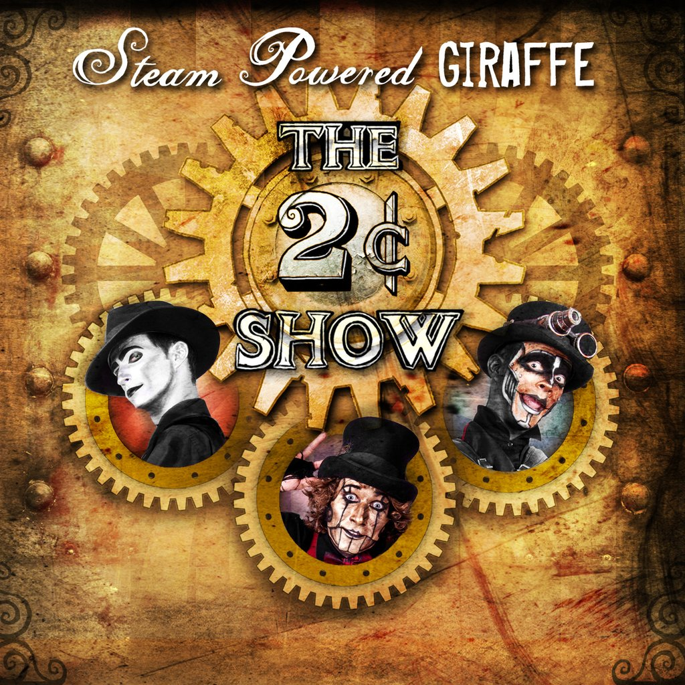
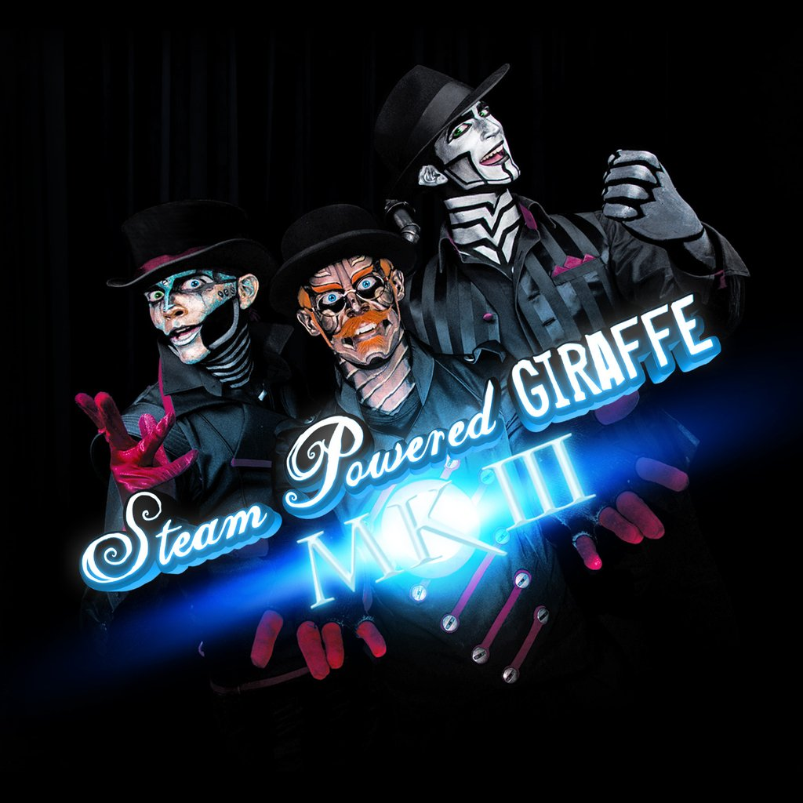
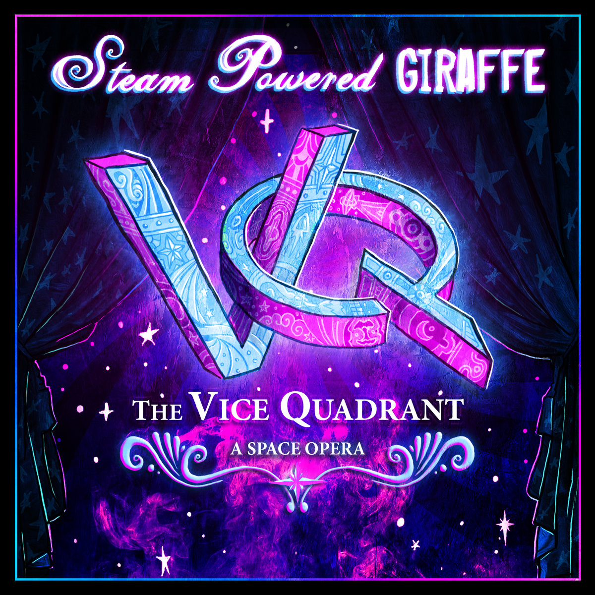
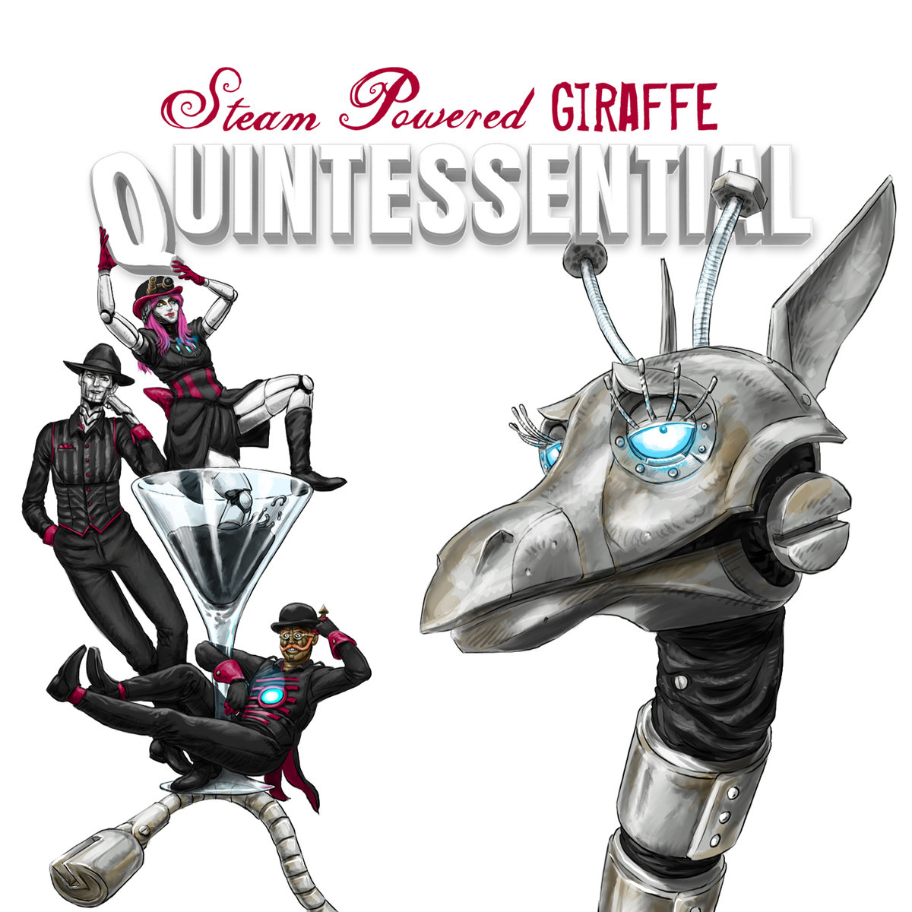

We're gonna start the show
I'd like you all to know
You need to cover your eyes please, please
Count to twenty, one is plenty
Cue the curtains please, please
Open your eyes see the robots singing
I present to you the steam man band
Especially constructed just for you
Clockwork Vaudeville
When I was a young boy I went down to the county fair
Brought myself a nickel, bought a pickle, had change to spare
Thought I'd spend a cent or two to see what the robots could do
There were wires all around
Electrical sounds
Steam from their exhausts
Gears and coils all criss-crossed (Ah, ah, ah ha ha, Eay!)
Everybody's going to the clockwork vaudeville
Everybody wants to see the show
People crowd the door and scream and shout for more
While music and song fill the air
There were four metal people dressed oh so sharply
They sung and danced a catchy tune with automaton robotic ease
Their guitar strings hummed to the beat kept by their tambourine
Boilers making steam (ah ha ha ha ha)
Metal gleaming (ah ha ha ha ha)
Songs with a good tune (ah ha ha ha ha)
That would stick with you all through the afternoon (Ooo, ooo, ooo who who)
Everybody's going to the clockwork vaudeville
Everybody wants to see the show
People clap and stop their feet and join in with the robot beat
While music and song fill the air
Clockwork vaudeville (Clockwork vaudeville)
Clockwork vaudeville (Clockwork vaudeville)
A man came up to me after the show, after the show
(He had a moustache)
And asked me if I'd like to meet the robots up close, the robots up close
(Not programmed to bite)
Well they greeted me and one shook my hand, one shook my hand
(Absolutely cool)
And asked me if I'd like to join his robot band, I said oh yeah
Oh yeah, yeah, yeah, yeah-ah-ah
Everybody's going to the clockwork vaudeville
Everybody wants to see the show
People crowd the door and scream and shout for more
While music and song fill the air
When I was a young boy I went down to the county fair...
Sound of Tomorrow
Who am I, who am I
but a sound of tomorrow?
I'd like to fly across all of the world
in a balloon
I'd give my pair of socks to a clown who's lost his
on the moon
I don't know much 'bout anything
that you'd have me do
I don't care much about anything
'cept for the love in your heart
Who am I, who am I
but a sound of tomorrow?
Who am I, who am I
but a sound of tomorrow?
I'd like to dance across all of the earth
in the nude
I'd give the chance I've got
n'give all my love to you
I don't know much 'bout anything
that you'd have me do
I don't care much about anything
'cept for the love in your heart
Who am I, who am I
but a sound of tomorrow (x4)
On Top of the Universe
I only saw her once
But that was all I needed
And now I know she's what
I've been looking for
And only she will do
I haven't slept for days
Can't focus on anything
She's always on my mind
And God it'd be so kind
If you could let me be
For my entire life
I never knew what love was like
But now I've felt its touch
And its far too much
For me to hold inside
Feels like I'm
On top of the universe
On a shootin' star
Life is so wonderful
And everything is by far
(So spectacular)
Feel like I've never felt
Seen things I've never seen
Being with her will make me happy
And I'm falling in love
(Don't catch him)
Few girls will offer you
A love that feels like this
Don't ask for any more
Just run and go with it
Feels like I'm
On top of the universe
On a shootin' star
Life is so wonderful
And everything is by far
(So spectacular)
On top of the universe
On that shootin star
Life is so wonderful
And everything is by far
So spectacular
Ice Cream Parade
Ice Cream Man
Give him a hand
The greatest man in all the land
Give him your hand
He has scoops for hands
The ice cream scooping man
Freezer box chest
Fastest scoop in the west
His ice cream is the best
It's no contest
And might I suggest
Its his ice cream to ingest
He has all your favorite flavors
Like Butterrumple Butterberry
Give me more of Double Triple-Dipped Dinosaur Cherry
Wumple Dumple Happy Sprinkle Shoe Cream Pie
Platapus Surprise
Brass Goggles
(Attune your ears to the grinding gears)
Come with me I'll show you how to be a metal man
When the gears are turning and the fires are burning
When the world ticks around you,
voices tocking all the time
And you live for sleep you've never slept
because you cannot sleep
Colonel Walter was shocked
when he learned from the Nile
Copper African elephants turning hostile
So he built these wonderful automaton bloaks
And a very big steam powered giraffe what smokes
Now the war is passed and over
We're left to sit and wonder
What is life and what is real?
And why do living things need feeling?
(One, two, three)
Chorus:
La-Da-Da-Da-Da (x3)
La-Da-Da-Da-Da-Da
La-Da-Da-Da-Da (x2)
La-Da-Da-Da-Da-Da-Da-Da-Da-Da
How'd you like to try pumping
lead through your veins
Or have a heart so wet and cold it starts rusting
When the world ticks around you,
voices tocking all the time
You live for feelings you've never felt
because you cannot feel
And what is this leaking affecting my eye?
Does the oil that is dripping mean this is a cry?
Will I ever be something with feelings to hide?
Or am I just a boiler with nothing inside?
I want all today
Don't want to hear you say
You can't do this, you can't do that
You're not a living thing with feeling
(One, two, three)
(Chorus)
Wind me up, turn the gears (Brass goggles!)
Wind me up, turn the gears (Brass goggles!)
Wind me up, turn the gears (Brass goggles, goggles, goggles!)
Wind me up, turn the gears (Brass googles!)
(Part 1 & 2 together)
Part 1:
I want all today
Don’t want to hear you say
I love you, I love you
I love-love-love you
Part 2:
Colonel Walter was shocked when he learned from the Nile
Copper African elephants turning hostile
So he built these wonderful automaton bloaks
And a very big steam powered giraffe what smokes
Wind me up, turn the gears (x4)
(Chorus)
Out in the Rain
Out in the rain,
Out in the sun,
Out in the rain,
Out in the sunshine
There is no place I'd rather be
Don't give me nothing in between
Just give me sun drops in my eye
And let the rainshine light the sky, sky
Out in the rain,
Out in the sun,
Out in the rain,
Out in the sunshine
Do you recall when you were young?
You never worried 'bout the sun
Now you know better so you say
Just don't let sunshine fade away, way
People say don't go out to play
You might catch your death or a cold
People say don't go out today
You might get wrinkly and old
But if you don't go out at all
You'll never feel the rain...fall
Out in the rain,
Out in the sun,
Out in the rain,
Out in the sunshine
Out in the rain,
Out in the sun,
Out in the rain,
Out in the sunshine
Out in the rain,
Out in the sun,
Out in the rain,
Out in the...
Electricity is in My Soul
You came home last night and seemed far away
I could not believe
that you were alright with everything
Night is the key that unravels everything
When it all comes down
And people tend to erupt without a sound
I know you don't like how I feed but please try to remember it's natural for a thing like me
Electricity is in my soul, soul
Electricity is in my soul, soul
I snuck outside once you fell asleep
and I walked down the road
to give my electronics an overload
I know you don't like how I feed but please try to remember it's natural for a thing like me
Electricity is in my soul, soul
Electricity is in my soul, soul
Electricity is in my soul, soul
Electricity is in my soul, soul
Soul, soul
Soul, soul
Soul, soul
Soul, soul
Electricity is in my soul
Steam Man Band (Reprise)
Gather around
Please pay attention
I think they'd like to thank you for your time
We're coming to a close
But problems have arose
Apparently there's parts of me that stick around too long
So lucky for the audience they get another song
And this one's just for you
Blind Minstrel’s Ballad
Captain Albert Alexander
He went down in the sea
But that Captain Albert Alexander
He'll go down in history
Captain Albert Alexander
When he was a boy
he wanted to play
down by the sea
At age thirteen
everyday after school
he would always sail around the lake
All the people would stand and stare
as he sailed around with precision and care
With his bi-corner hat and the way he would stand
he looked just like a Navy man
All the townsfolk would gather and say, and sing away
Captain Albert Alexander
He'll be a brave seafarer someday
But that Captain Albert Alexander
He'll go down in the waves
By age twenty four
he had left the shore
and was sailing for the Queen
On a dark starry night
Albert awoke to the sound
of his Captain screaming as he was drowned
The Navy crew was taking a lick
pirates had invaded the ship
But Albert with one aimed harpoon
ignited their rum with a spark and soon
flames drove the pirates away
the Navy sang
Captain Albert Alexander
Saved his crew from pirate slaughter
But that Captain Albert Alexander
He'll go down in the water
Now everyone dance
Dance. Dance.
Twenty some odd years later
On his ship The Sea Slater
He sailed into a mass of blubber
Gazing up to the sky
stood a large walrus
that was a hundred stories high, it meant no harm
The walrus was in a great deal of pain
It suffered from a tusk with tooth decay
Albert threw his anchor 'round it's tusk
with a little bit of pulling it was out by dusk
The walrus thanked Albert and sang, as he sailed away
Captain Albert Alexander
Friend to sea urchin and me
But that Captain Albert Alexander
He'll go down in the sea
At a ripe old age lightning struck from the sky
and split Albert's vessel in two
One hundred men fled for their lives
on rafts across the ocean blue
Albert stood at the stern of his ship
A giant octopus had him in it's grip
A vortex of spiraling death below ripped
and sharks and electric eels all made the trip
to see Albert
sink to the bottom of the sea
Just before he went down
he called out to his crew
It's obvious that my time has come
I'll let this ending ensue
I've led an exciting nautical life it would seem
and there's no better end than a death by the sea
His crew sang
Captain Albert Alexander
He went down in the sea
But that Captain Albert Alexander
He'll go down in history
That Captain Albert Alexander
He went down in the sea
The 2¢ Show

Steamboat Shenanigas
One-Way Ticket
Ju Ju Magic
Me & My Baby (Saturday Nights)
Little Birdie
Rex Marksley
Automatonic Electronic Harmonics
Prelude To A Dream
Make Believe
Honeybee
Scary World
The Suspender Man
That'll Be The Way Home
The Ballad of Lily
Airheart
Circuitry
Lyrics
Lyrics
Lyrics
Lyrics
Lyrics
Lyrics
Lyrics
Lyrics
Lyrics
Lyrics
Lyrics
Lyrics
Lyrics
Lyrics
Lyrics
Lyrics
Steamboat Shenanigas
Goin' up the river,
takin' all mah friends
We're all headin' to th' place
where the music never ends
Folks would you like a milkshake?
Chocolate or vanilla?
We've got anything you'd want
and a fountain of sarsaparilla
Welcome board the S. S. Biscuiteer
Feel free to chime in with music
that you hear
'Cause this here steamboat runs off a
catchy tune
so if everybody sings along
we might make it to the moon
Music so hot and loud
burns through the deck
riles up the crowd
Check your watches at the door
Bring your smiles for what's in store
The dancing is free
Steamboat Shenanigans
Steamboat Shenanigans
The smoke stacks up high
are billowing clouds to the sky
While we all partake in those
Steamboat Shenanigans
Nanigans, nanigans,
Nanigans
Oh, Steamboat Shenanigans
One, two, three
Steamboat Shenanigans
Take a trip with me
The river below stretches
on for miles
and this here's one steamboat trip that'll
make you smile
Steamboat Shenanigans
Steamboat Shenanigans
The band that you hear
was built from metal and gears
and we all partake in those
Steamboat Shenanigans
It's raining down on us
The skies are grey but we don't fuss
The cold is bringing them down
but if we start a song and all sing along
we might break the sun through the rain
Come on and celebrate
Music so hot and loud
burns through the deck riles up the crowd
Check your watches at the door
Bring your smiles for what's in store
The dancing is free
The music was
Burning, burning
La Da Dada Da Da
Burning, burning
La Da Dada Da Da
Burning, burning
La Da Dada Da Da
Burning, burning
La Da Dada Da Da
Steamboat Shenanigans
Steamboat Shenanigans
The smoke stacks up high
are billowing clouds to the sky
While we all partake in those
-can't get away from those
-I wanna stay with those
Steambo- Ho-Hoat
Well let's get packin'. Get back on track in
the lovely morning sun
We've got a song in our heart and a dream in our heads
Hearts in our heads, and dreams of a song
We'll Sing it all day long. C'mon now board that train with me
I've got a one-way ticket to destiny
A one-way road to my future.
And a two-way love with a special girl
she's gonna be right back
right back in my arms
That road is long, You can't Go wrong,
With blue skies up above
We've got the sun in our face and the wind in our wheels
Smile for the day and Sail to the stars
Make a wish and see. C'mon now board that train with me
I've got a one-way ticket to destiny
A one-way road to my future
And an intersection that will seal my fate
As a man so happy
Happy to be free
As we roll along with This train ride song
You know we'll meet lots of friends
Like the cowboy who's a samurai
Boy, what a combo, Holy cow what a guy
The conductor plays the bass
And the train it has a face
Stormy days are around the bend.
No wrenches, water, or outlets
Roll across a sea of burning oil
As mechanical sea serpents swarm around the train
Under a cloud that won't stop crying
Raining down on a mountain what spits fire
The sky and ground used to love so well
So we play them a song,
And we right their wrongs,
And everybody gets along
We've got a one-way ticket to destiny
A one-way road to our future
And a two-way love that we know so well
'Cause that is all you need to live
A One-way ticket to destiny
A One-way road to our future
And a two-way love that we know so well
'Cause that is all we need to live
A One-way ticket to destiny
A One-way road to our future
And a two-way love that we know so well
'Cause that is all you need to live
That is all you need to live
Love is all you need to live
Love is all you need to live
Ju Ju Magic
Floatin' down aimlessly.
Atop a swirlin' tree.
Blue ribbons in the apple sky.
One thing is on my mind.
Runnin' in circle dream.
Nothin' is as it seems.
Seesaw in the jungle gym
Hey man are you listenin'?
Ju Ju Magic
Ju Ju Magic
Ju Ju Magic
Ju Ju Magic
Yeah!
(Jon you're goin' crazy- goin' crazy- goin' crazy! Jon you're goin' crazy- goin' crazy- goin' crazy!)
(Ah-ha-ha-ha-ha-ha! Ah-ha-ha-ha-ha-ha!)
Livin' moko jumbie.
Across a whirlin'sea.
Red rubble in a golden hill.
Hey now have you had your fill?
Dancin' comes naturally.
to those who let it be.
Jingle-jangle and a just give in.
Hey man are you listenin'?
Ju Ju Magic
Ju Ju Magic
Ju Ju Magic
Ju Ju Magic
Yeah!
Ju Ju Magic
Ju Ju Magic
Ju Ju Magic
Ju Ju Magic
Ju Ju Magic
Ju Ju Magic
Ju Ju Magic
Ju Ju Magic
Yeah!
Me And My Baby (Saturday Nights)
Is there such a thing as too much of a good thing?
I ask myself that everyday
That is until the weekend comes and the sun has gone away to sleep
Then there's only one thing on my mind (a good time)
That's right
Me and my baby love Saturday nights, Saturday nights
(Saturday)
Yeah, Me and my baby love Saturday nights, Saturday nights
(Saturday)
With The dancing and the singing,
like the weekdays never happened
I could be, I should be dancing right now 'cause
Me and my baby love Saturday nights, Saturday nights
(Saturday)
Yeah, Me and my baby love Saturday nights, Saturday nights
(Saturday)
The talk of the town is where we're headed next
cause everywhere we go is the best
(The very, very best)
It doesn't matter the company but we're pretty good company
for you to have around
(Around, Around, Around)
And Me and my baby love Saturday nights, Saturday nights
(Saturday)
Yeah, Me and my baby love Saturday nights, Saturday nights
(Me & My Baby love, love, Saturday)
With the dancing and the singing,
like the weekdays never happened
I could be, I should be dancing right now 'cause
Me and my baby love Saturday nights, Saturday nights
(Me & My Baby love, love, Saturday)
Yeah, Me and my baby love Saturday ni-ha-ha-haights
(Me & My Baby love, love, Saturday)
Here we go...my baby & I, My baby and I-hai...My baby!
We're goin' Dancin' tonight!
The dull-drum of the work week gets me feeling down
misery and sorrow follow us around
But when that music hits and the band starts to play
Please, you better get out of our way
'Cause Me and my baby love Saturday nights, Saturday nights
(Me & My Baby love, love, Saturday)
Yeah, Me and my baby love Saturday nights, Saturday nights
(Me & My Baby love, love, Saturday)
Me and my baby love Saturday nights, Saturday nights
(Me & My Baby love, love, Saturday)
Me & My Baby love, love, Saturday
Little Birdie
Hello, little birdie
I like your silly little hat
You go, oh so, so high
In the sky
Yeah, yeah, yeah
I want to be your friend
We could sail the sky
Eating moonpies
In the stars
In the stars
In the stars
Hello
Rex Marksley
Rex Marksley
Finest marksman in the west
Rex Marksley
When it came to gun slinging he was the best
Rex Marksley at an younger age
shot holes in cans without a missin'
sadly they were in the pantry
so beans painted the whole darn kitchen
His parents then let him shoot
the empty cans out on their fence
but Rex trick shot out all the nails
so out the fence all their cows went
His father cried
Rex Marksley
Finest marksman in the west
Rex Marksley
When it came to gun slinging he was the best
Rex Marksley was a tinkerer
an engineer extraordinaire
He made quick-reloading gadgets
so he could fire non-stop with panache and flare
He became a gun for hire
and a hero whereever he roamed
he disarmed forty bandits one time
with two gunshots all on his own
Rex Marksley
Finest marksman in the west
Rex Marksley
When it came to gun slinging he was the best
He had heart and a righteous stand
and they tell of his stories across the land
He jammed the guns that fired his way
by shooting bullets into their barrels they say
He shot lightning from his hands with a miraculous invention,
and zapped that evil demon train back to it's own dimension
That giant copper ore golem, oh it was a fright,
till Rex projectiled pick axes with dynamite
He fought the corrupt Rattlesnake King and it hissed in agony,
then Rex taught all the jackalopes to yodel in harmony
Here we go now!
(Yodeling)
Rex Marksley rode across the West bringing justice to the land
He tamed enormous vultures, reined and flew them with one hand
All the women blushed and fainted when Rex winked his eye
and the bad guys always fell to their demise
The man was a legend and hero through and through
and Rex was a friend to the battered and the bruised
He had seen a lot of wonderments in his glory days
and he died an old man alone on the prairie they say
Rex Marksley
Finest marksman in the west
Rex Marksley
When it came to gun slinging he was best
Yeehaw, yeehaw
Yehaw!
Bang bang!
Automatonic Electronic Harmonics
Ever since the first time I opened my eyes
I've awakened to the same thing
Other automaton friends roughly built like me
The first time I opened my mouth to speak
steam escaped to the air
and black oil dripped from my lips
and onto the ground
Well daylight struck a chord with my
photo-receptors
Night greeted me with a sea of stars
Our eyes all flashed blues and greens
through the night
It's just our
Aaaaaaaaaah Automatonic
Electronic
Harmonics
People are soaring, always exploring,
higher than they've ever been before
But we are still down here,
feet on the ground near
what will rise us up with the rest
Our thoughts are quixotic, stark and robotic,
mechanical in nature all the time
And pulses are firing in our head wiring,
guiding all our actions and beings
It's just our
Aaaaaaaaaah Automatonic
Electronic
Harmonics
I am not an unimaginable thing
My thoughts are tangible
though they're full of springs
I don't have the heart to send you untruthful words
My skin is cold to the touch and made from the earth
They say
Oh, oh it's so down, but baby it's sound
makes your worries cease to pound
And oh, maybe it's alright, 'cause baby it fights
for some time just to be held tight
And oh, maybe it's not wrong, 'cause it sings a lovely song
one that drifts on for so long
And oh, baby let's not lie, it's eyes are alive
and pointed up shining light to the sky
It's just our
Aaaaaaaaaah Automatonic
Electronic
Harmonics
Epic and so cool
Epic and so cool
Epic and so cool
Epic and so cool
Aaaaaaaaaah Automatonic
Electronic
Harmonics
Aaaaaaaaaah Automatonic
Electronic
Harmonics
Prelude To A Dream
Here I go again
I'm breaking up
I'm shutting down now
Inside, outside, decommission
wonder if its painful
Reading love and writing love
technically the same
I am a living thing
I am not a human being
But I'm alive, I'm alive
Make Believe
Aaaah-oho
Ahh ahh ha
Hai, ai, ai. yai, yai-yeh
La la la la
La la la la-dee-da
La la la la-dee-da
Woo-hoo, oh yeah
La la la
People
Why just talk about it?
Can't we live without
all the bounds?
Our society is Make Believe
Break it
Don't be afraid to shake it
We're not afraid to shake it around
in society
Make Believe
Hey kids whaddaya know
what do you think you're doing?
I say pardon me
I'm dancing for no reason
La la la la la la la la lalalala
La la la la la la
La la la la la la la la lalalala
La la la la la la
Doubt it
Get right up and shout it
Try it out and flout all the bounds
of society that are Make Believe
Dream it
But you've got to really mean it, brother
There is no disagreement
The stage of society, it's Make Believe
Hey kids whatcha know
whatcha think you're doing?
I say pardon me
I'm dancing for no reason
La la la la la la la la lalalala
La la la la la la
La la la la la la la la lalalala
La la la la la la
La la la la la la la la lalalala
La la la la la la
La la la la la la la la lalalala
La la la la la la
Life's too short so spread the love
You know it is, you know it is
Do great things
where you know they must be done
Someone's got it worse than you
You know he does, you know he does
So I'm asking you to spread the love
La la la la la la la la lalalala
La la la la la la
Honeybee
You didn't have to look my way
Your eyes still haunt me to this day
But you did. Yes, you did
You didn't have to say my name
Ignite my circuits and start a flame
But you did
Oh, Turpentine erase me whole
(Cause I) don't want to live my life alone
(Well I) was waiting for you all my life
Oh
Why
Set me free, my...honey-
Bee
Ho-ney
Bee
You didn't have to smile at me
Your grin's the sweetest that I've ever seen
But you did. Yes you did
You didn't have to offer your hand
Cause since I've kissed it I am at your command
But you did
Oh, Turpentine erase me whole
I don't want to live my life alone
I was waiting for you all my life
Oh
Why
Set me free, my...honey-
Bee
Ho-ney
Bee
Hello Goodbye, Twas nice to know you
How I find myself without you
That I'll never know
I let myself go
Hello Goodbye, I'm rather crazy
And I never thought I was crazy
But what do I know?
Now you have to go
Honeybee
Honeybee
(Round)
(Round)
(Acapella Round)
Rabbit & The Jon:
Hello Goodbye, Twas nice to know you
How I find myself without you
Hello Goodbye, I'm rather crazy
And I never thought I was crazy
The Spine & Michael Reed:
That I'll never know.
I let myself go.
But what do I know?
Now you have to go.
Scary World
I don't know where everyone goes
Its not like us to follow
It seems that we are all alone
And don't know where to go
I'm safe right here
We know who we are
It's kind of scary
Thinking of what is out there
It's a scary scary world
and there are scary scary things
werewolves in the night
and vampires with fangs
Oh I want to live in a peacefull world
But I can't seem to find another world
that's not scary (not scary), not scary (not scary),
not scary (not scary), not scary (not scary)
Oh, I'm not sure when the time is right
To leave this place without a fright
Don't want to face the fears we've met
And be full of regret
'Cause I'm safe right here
We know who we are
And It's kind of scary
Thinking of what is out there
It's a scary scary world
and there are scary scary things
zombies in the way
eating their own brains
There are she-devils and sucubi that just want their way
And bruteful demons that just want to have all the reins
it's so scary (so scary), so scary (so scary),
so scary (so scary), so scary (so scary)
La la la la la (la la la) La la la la la (la la la la)
La la la la la (la la la la) La la la la la (la la la la)
La la laaaaaa La La La La La La La
La la laaaaaa La La La La La La La
La Laaaaaa (la la la) La Laaaaaa (la la la la)
La Laaaaaa (la la la) La Lalalalalalalala lala (lalalalalalalalalalalalalalalala)
Ooo Ooo Ooo Ooo, Ooo Ooo Ooo Ooo
So scary, so scary
So scary, so scary, so scary
The Suspender Man
One moonlight night in the bayou a silhouette
The air was sweet and the fog was vi-o-let
The gators were all drinking tea, in a dreamy pantsless glee
I saw a suspendered man, a banjo holstered in his hands.
He had biggest red suspenders I ever did see, golly gee that's what I've seen
He flicked the brim of his hat, and this is what he said to me.
"Mister robut ah am The Suspender Man
And dis banjo 'as shown me dah promised land.
Now ah play a song but in return, yoo put dat shiny coin right 'ere in mah urn.
And ah play yoo sumfin fine. Mah music gonna blow yo mind!"
So I flicked my coin into his pot, I gotta admit it twasn't a lot
Two cents and then his fingers wriggled,
he plucked those strings and belched a giggle.
He tapped his foot, howled like a hound
Igniting up the unholy sound.
And I ain't never, never, never, never, never, never, never, never,
never, never, never, never, never, never, never, never,
never, never, never, never, never, heard anything so great.
Call the vendors.
Big Suspenders.
That's what everybody wants to wear.
They stretch to Nantucket.
Put them in a bucket
And send them to the gnome trapped down the well
(Tug 'em with thumbs is ideal)
(While rollin' back on your heels)
(Yeah)
He played the two cent show
And just like that he stopped playing
My jaw dropped to the floor.
He cracked his neck and smiled at me,
And said,
"Buddy, y'gotta pay for more!"
But by then a crowd had swarmed the swamp,
tossin' coin in after coin.
So he cleared his throat, and his fingers writhed,
and everyone shouted for Suspender Guy.
Call the vendors
Big Suspenders
That's what grandma wants for her birthday
They're bright red and awesome
Even worn by opossums
Nobody wants their pants to fall down
(Ma and Pappy want 'em too)
(Even the ghost of your Uncle Stu)
(Yeah)
He played the two cent show
Fracture dat banjo!
All the children sing and dance
Those banjo sounds instill a trance
By 4 AM the press what hot
Suspender Man on the front page spot
Suspenders were in and spats were out
The girls all suffered from fainting bouts
The banjos flew off the shelves
Sprouting wings with dreams
of being played by Suspender Man.
But in the middle of February
the fog turned a crimson red
The Suspender Man disappeared,
everyone was heels over head
But we found his suspenders and that old banjo
sittin' right there on his log
And though he's gone,
that's what he gets
for selling his soul to the bog
Big Suspenders
Put them in a blender
Three bat teeth and a blackened gypsy eye
Bring it to a boil
Release your mortal coil
Out pops a belt to wear for you and me-
Nobody wants their pants to fall down-
You could wear a dress and then...you'd have no need
(The alligators had it right)
(Wearing pants it sure does bite)
(Yeah)
He played the two cent show
That’ll Be The Way Home
(Ahhs)
A man takes off from an airfield
and he's a'soaring very far from home
'cause he flies a B-17 straight through the sky
He's homesick and he knows
it'll be a long time till he's done
and he's got a beautiful girl
waiting at home
He opens up a letter from her. She writes,
here's a color picture of me
(a pretty picture)
Just head towards my blue eyes,
when you're finding your way back to me
Well,
That'll that'll that'll that'll that'll that'll that'll that'll
That'll be the way home
Yes,
That'll that'll that'll that'll that'll that'll that'll that'll
That'll be the way home
Straight through the sky
headed towards her blue eyes
A lieutenant of the Navy
took his very first steps today
Onto the ship that would become his new home
He and his wife
had shared a very special goodbye
when they kissed in the night underneath
a star of their own
As the lieutenant gazed up
and saw their star shining bright
(oh so bright)
He knew it would guide him home
when the time was right
Well,
That'll that'll that'll that'll that'll that'll that'll that'll
That'll be the way home
Yes,
That'll that'll that'll that'll that'll that'll that'll that'll
That'll be the way home
Starin' into the night
Keeping their star in sight
All you infantry men and you riveting gals
don't ever need to give up hope
all you doctors, and nurses, and engineers
need not worry for long
If we all look towards what we miss most
and keep that drive in our heart
Well,
That'll that'll that'll that'll that'll that'll that'll that'll
That'll be the way home
Yes,
That'll that'll that'll that'll that'll that'll that'll
That'll be the way home
The Ballad Of Lily
Some girls say all they need is dreaming
But some girls say they ain't got time
But for those who dream
Well they just keep dreaming
We've got to chase the dream to be happy
Do you wanna sail into the sky?
Soar across the stars?
Well, I knew a girl, and her name was Lily
But her Daddy called her something rather silly
He called her by a name which matched her art
Come on and fly with me, fly with me,
my little Airheart
Airheart
Her father fought in the great war
In an aeroplane named Bree
He gave his love to a pretty girl
And said, "Baby you're the one for me"
And though her name was Bree,
He still found it all a shock
When he found out she was an airplane,
The stork began to knock
A baby girl was born
With air rudders on her back
She picked up airwave frequencies
And petrol was her favorite snack
Whale she bubbled noises like an airplane
Every time she sang
And her heart it loved so hungrily,
And roared like a Mustang
That's why they called her
Airheart
Airheart
That girl was meant to fly
So prep the runway
Airheart
Airheart
That girl will soar away
She was an angel in her blue dress
When Little Jimmy Wright took her to prom
The young pilot said he loved her,
And oil began to clam her palm
Well he was lost in the sky
And they said he had died,
But I know something more
They only found Jimmy's goggles,
In his plane upon the floor
Well years went by
And she still looked to the sky,
Her feelings did not disperse
She could fly any plane just like an ace
And kept goggles in her purse
And she swore she still heard Jimmy singing, "That'll Be the Way Home"
It would haunt her from her radio
In each sky that she would roam
Jimmy's voice echoed
Airheart
Airheart
I'm sorry that I flew away
But just remember
Airheart
Airheart
Keep flapping and you'll soar one day
Lets Fly!
Do you wanna sail into the sky?
Soar across the stars?
Sail into the sky?
Soar across the stars?
Sail into the sky?
Soar across the stars?
The stars?
The stars?!
The stars!
Then one fateful day
Ended with a storm streaked sky
Her plane crashed into the mountain side,
Was she flying much too high?
They only found Jimmy's goggles
In her plane upon the floor
I hope she's up there somewhere with him
Kissing on a cloudy shore
The birds were singing
Airheart
Airheart
That girl was meant to fly
So prep the runway
Airheart
Airheart
That girl will soar one day
Air-air ha ah art
Air-air ha ah art
Air-air ha ah art
Air-air ha ah art
Air-air ha ah art
Air-air ha ah art
Air-air ha ah art
Airheart!
Circuitry
Circuitry, seems to me
more like a circus wheel
with dancing lights and purple horses
and of coarse there's giraffes
Just give in
Let it spin around
Watch and see, tell you greed
is more like a sleeping seed
See one its time let it shine
This is the age of the wiseman
Now complete all is freed
Breathe or be cold,
stories that hold us
told us together we are
MK III

Curtain-Raiser
Steam Powered Giraffe
Mecto Amore
Hatch Fever
A Way into Your Heart
Ghost Grinder
Please Explain
She Said Maybe
Go Spine Go
Roller Skate King
I'll Rust With You
Wired Wrong
Fancy Shoes
Steam Powered Giraffe (Reprise)
Turn Back the Clock
Bleak Horizon
Lyrics
Lyrics
Lyrics
Lyrics
Lyrics
Lyrics
Lyrics
Lyrics
Lyrics
Lyrics
Lyrics
Lyrics
Lyrics
Lyrics
Lyrics
Lyrics
Curtain-Raiser
Alert
Alert
Anamoly detected
Sound engineer verification codes required
Sound engineer voice verification: Steve Negrete
What's the problem, Be-Bop?
Musical initialization request detected.
You mean someone is actually trying to play the album?
Affirmative
Wow, I did not expect that - That is to say, uh - Fire it up, Be-Bop
Right away, Steve.
Wow! Be-bop! No, no no, disengage flamethrower!
Disengaged.
Sorry about that folks. Be-Bop, just play Mark Three, will ya?
Steam Powered Giraffe MK III initialization complete. Thank you for choosing Walter Robotics.
Steam Powered Giraffe
Composed of wires
and forged in fires
Our heads bolted on
and geared for a song
The spotlight shines,
gleams in your eyes
All the programing is done (oh yes)
Start-up commands are run (oh they run)
All meters are in the green (all right)
aligning our power core beams (oh aligning)
What we need is something steam powered
What we all need is something steam powered
What we all need is a steam powered giraffe
Steam Powered Gee-raffe
All systems are go
Steam Powered Gee-raffe
We are in control
But could it be what they perceive
are not flaws in our wiring?
All: It took a spurious coagulant
To know that virtual dreams aren't relevant
It's like baking an illogical pie
The time has come to forti-fih-hi-hi
R: (Lets go)
H: System Ready
S: (Lets go)
R: Power Steady
H: Boilers Burn
S: Gears are t-t-t-t-turn
R: I can feel it
when you say you love me
Ooo, you give me Mecto Amore
And the circuitry
between you and me,
it starts with the Mecto Amore
Oh!
(Chorus)
R: Mecto Amore(what is this feeling)
Mecto Amore (Please explain what it is)
This projection of alienation obsession
Conviction, confession?
Now that is the question
R: I can feel it
when you say you love me
Ooo, you give me Mecto Amore
And the chrysalis of a symbiotic change
starts the Mecto Amore
Woah!
(Chorus x2)
Hatch Fever
Rabbit:
There’s a knock
Spine:
Open the door
R+S: A human sized package
S: Rip through tape
R: like butter
S: and cardboard
R+S: like toast
R: No time for instructions
S: the fire’s diein’
R: Two birds
R+S: one stone
S: Fill the tank with water
R: Turn the ignition
R+S: and Hatchy Boy you’re ready to go
Hatchworth: Far
(Catch Hatch Fever!)
Far
(Catch Hatch Fever!)
There’s a hole
in your floor
we’ve got to
patch it up
Give it a cover,
a latch,
a hinge,
and a turn wheel
Well now you’re talking Hatch Fever-oh!
What’s the worth o’living
S: if you can’t make a living
R: not living but
All: faux living
H: Is there a difference?
A fever’s a fever
Come on everybody prepare to get catchy
S: Yeeeoh- Hatchworth that sounds a little morbid
R: Kids! D-D-D-Don’t try this at home!
H: If you took that last bit of advice
you gotta get to the emergency room
Please don’t act out these lyrics
We don’t want you to leave so soon
S: Follow instructions
R: And don’t hurt birds
H: And generally pair your nouns with verbs
S: Study real hard
R: Eat your vitamin soup
H: When all of that’s finished prepare to catch
Hatch disease
(Laaaaaaaaaa, that sounds bad)
It’s not a real disease
But if it were on another world then
(Aaaaaaaahhh)
All: We’re sorry
H: We wouldn’t wish it on anybody
S: Unless it makes you stronger
R: and live longer
H: Well then that’s just a good thing wouldn’t you agree?
But for now they’re just words and a good time
Come on everybody get down with the robots!
There’s not much left to tell which hasn’t already been stated
Consider yourself ninety-nine point nine percent Hatchworth acclimated
La-la-la-la-la-la-la-la-la-la-la-la-la-la-la-la
Catch Hatch Fever!
La-la-la-la-la-la-la-la-la-la-la-la-la-la-la-la
That should about do it.
A Way Into Your Heart
There was so much to discover
before your very eyes
Oh our cold hard exteriors- well they did shine
And then when you went through a change of heart
oh your smile well it did beam
When you saw that giant giraffe powered by steam
Your gaze was cold when you first looked our way
we made you smile with the songs we sang
We found a way into your heart
We found a way into your heart
We found a way-ay-ay, into your heart
Lately your love of life has been fading
(and we can’t see you that way)
We'll try to get you back up on your feet
(just tap your toes to the beat)
It'll be alright, it'll be alright
You're not in this alone
Just keep on trying, keep on trying
you can take my hand in your own
We'll be there for you
when you cry or smile
I guess we found a way to your heart, oh yeah
Oh we found a way to your heart, whoa-oh
Yeah we found a way to your
Heart
There was a rift between you and me
but happiness was a choice, you see
We found a way into your heart
We found a way into your heart
We found a way-ay-ay, into your heart
Disappearin’ ain't the way to make things right, don't be terrified
Hot molten metal will make a day out of this night, it's a burning sight
It’s never as simple as it seems
and they will never know
Rabbit:
I found a way into your heart
Hatchworth:
I found a way into your heart
All:
I found a way into your
a way into your
a way into your heart
Ghost Grinder
What ever happened
To the life we held so dear
We miss you most
When the thoughts can't disappear
Rest in Peace
Please find your way
Hear me crying
through the embers of the day
Come to me
And Da - ance
Come on and dance
Oh, I get a little fright
I get a little inspired
I give a little Hee-hee-hee
Oh, lets have a little fun
Before the setting sun
Lets give a little Hee-hee-hee
(Chorus)
Come on and da - ance
and save my soul
Go on and move those bones
as you used to know
The air is sweeter
with you floating near
Come on and dance with me
To the grinding gears
Come all, the ghost grinder is here
Rabbit:
Open your coffin a crack and
Listen up all you there specters
Hear the cry of the Grinder Lector
Join our dance and shake it loose
Cut a rug and swing the noose
Hatchworth:
Memories of the falling rain
Sun and heat they don't feel the same
Mem'rees they do scar and haun' you
Testify and claim its true
Spine:
But we've got no bones
No pulse of our own
But we tear up the floor
Lets show 'em what’s in store!
Rabbit:
Oh, I get a little fright
I get a little inspired
I get a little Hee-hee-hee
Oh, lets have a little fun
Before the setting sun
Lets give a little Hee-hee-hee
(Chorus)
Rest in Peace
Please find your way
Hear me crying
through the embers of the day
Come to me
And dance the night away
Come on and Da - ance
Come on and dance.
Yeah, I get a little fright
I get a little inspired
I get a little Hee-hee-hee
Oh, lets have a little fun
Before the setting sun
Lets give a little Hee-hee-hee
Grab your candy skull and
(Chorus)
Please Explain
Hatchworth:
Gather round
sit on down
forget your worries
what’s lost is found
Purge the data
break through strata
dust off your CPU
put it to a new use
Rabbit:
Been trying to get this one out
for a good long while
the centuries turn to the past
still I lay beguiled
Involuntary remarks
for an old quandary a new
Left in the dark
what’s an old robot to do
Please explain
What to do with this wild goose
if there’s nothing to chase (please explain, oh-oh-oh)
What to do if the screw turns loose
and there’s nothing to gain please explain it to me
Hatchworth:
If your moustache makes a sandwich
serve it on a platter
to lovely nouns they need a verb
the panda climbs the ladder
if my mouth was made for mimicry
what’s a bronze robot to chew
Gum in my gears
and bat meat in my fancy shoes
Please explain
What to do with the panda on the roof
Guess it makes for good imagery (please explain, oh-oh-oh)
What to do with the bat meat in my fancy shoes (woah-oh-oh)
I could sell it to the panda. Please explain it to me
Spine:
I do not need uranium
or your fossil fuels
Friction from curiosity
powers my hydro-tubes
Answers stem more questions
and grow my algorithms anew
H: They do?
S: Yes they do
If there’s no concepts to grasp
what would I, robot, do
Please explain
What to do if the point is moot
What’s a moot anyway (I don’t know)
H: Is it the meat in my fancy shoes?
R: Or the name of this wild goose?
S: Guess we need some good-old-fashioned explaining
to warm me forever
Time can make the world strange
Folks you knew don't seem the same
Time don't care
It beats you there
And takes it all from you
Don't you think
Even a blink
Is safe from all you knew
I see the girl here
And she's smilin'
Missing two front teeth
Age is three plus three
Well she's a'laughin'
Her hair is golden
Her toes a tappin'
To the robot band
I still see her now
Smiling
Her hair done up in bows
Her brown eyes twinkling
She hummed a little song
For me
From a music box
Given by Mommy
Turn back the clock
Turn back the clock
Turn back the clock
For my love song
The autumns roll by
a young lady
takes the child's place
Pig tailed freckled face
And she's a workin'
On a'growin'
While the world does change
Her smile stays the same
There is a woman
with a man
her hair is dyed black
But that smile it still came back
After the curtain
She leaves a little box
A tiny dancer spins
Music plays from within
Turn back the clock
Turn back the clock
Turn back the clock
For my love song
A little girl sits
And she's laughin’
She looks just like her
With her golden curls
The smile's there
It's not the same smile
Where'd my girl run to
Will she be back soon?
I see her now
Smiling
Come on back
To me
Hum her little song
Where did she go?
Where did she go?
Where did she go?
Don't leave, Don't leave
Turn back the clock
Turn back the clock
Turn back the clock
Turn back the clock
Turn back the clock
Turn back the clock
For my love song
Bleak Horizon
Well, you see
it looks like we’re done here
Shall we move up and on,
into the Stratosphere
Hey now,
no need to be frightened,
‘cause as long as we’re together,
there’s nothing to fear
I don’t believe in a bleak horizon, I won’t concede to all of that
what we need now is something different, what we all need is a... steam powered giraffe
The Vice Quadrant: A Space Opera

PART 1
The Vice Does Tight
On a Crescendo
Steam Junk
Starburner
Progress and Technology
W.i.n.k. The Satellite
Burning in The Stratosphere
Fire Fire
Sky Sharks
Daughter of Space
Star Valley Night
Commander Cosmo
Where Is Everyone?
GG The Giraffe
PART 2
The Pulls
Soliton
Where I Left You
Over The Moon
It's Cosmic
Hold Me
The Speed of Light
Rav to the Rescue
Starlight Star-shine
The Space Giant
Oh No
Necrostar
Super Space Blaster
Whale Song
Lyrics
Lyrics
Lyrics
Lyrics
Lyrics
Lyrics
Lyrics
Lyrics
Lyrics
Lyrics
Lyrics
Lyrics
Lyrics
Lyrics
Lyrics
Lyrics
Lyrics
Lyrics
Lyrics
Lyrics
Lyrics
Lyrics
Lyrics
Lyrics
Lyrics
Lyrics
Lyrics
Lyrics
The Vice Does Tight
There must be something (x6)
There must be something more
to life than this vice
There must be something more to life
that we can’t even know
Maybe somewhere on a purple shore
beyond the status quo
The lights from Mars
Well we’ve seen it before
The telescopes tell us it's true
A cluster of stars
bringing woe and such pain
What’s a poor little planet to do?
The vice does tight
And the vice does bite
And we will not slip
from its firey grip
And the vice does thrive
Though its been deprived
And the vice will gnaw
with its cosmic maw
The vice does tight
There must be something (x6)
More
Spine: We hoped that there was life out there
But we could never know
That the horrors of the stars above
could crush us with one blow
Hatchworth: The pods of whales; they were fleeing something
Now we’re tangled in a web like flies
Tendrils grasp from afar
and they’ll bring us our end
by the hand of a million eyes
Rabbit: What’s in the sky?
The vice does tight
And the vice does bite
And we will not slip
from its firey grip
And the vice does thrive
Though its been deprived
And the vice will gnaw
with its cosmic maw
The vice does tight
There must be something (x6)
More
There must be something (x3)
More
On a Crescendo
Before long
They will build a city along
all the sky and anchor it tight
to this rock so we can sail right out of here
Faux nights
fade right into our existence
as we travel up the tethers
start to float a little as we reach our end
The sky bleeds
we mend it near the constellations
the dying giants feel their fears
slowly get built away today
All us
in our own known lives
Now have a chance to shine bright
and we will all be dancing in that light
Dancing in that light (x3)
On a crescendo
making the best of it all
On a crescendo
now we can fly and not fall
All overnight
we could lose sight
But we have heard our screams
And woe isn't happening
Darker days may have been
a little more hectic back then
But we now have the tools
and our sorrows melt to pools
On a crescendo
making the best of it all
On a crescendo
now we can fly and not fall
On a crescendo
making the best of it all
On a crescendo
now we can fly and not fall
Steam Junk
I certainly am, a long way from home, but that’s ok, I was built to explore
Powered by, steam and purpose pie, to search for, a home away from home
I must carry on, until the last drop
I must never stop, until I am SteamJunk
It's a difficult thing to define, a love for a world I’ve yet to find,
I mean I know that she is out there, and folks are counting on me to find her
I must carry on, until the last drop
I must never stop, until I am SteamJunk
During the darkest of the night, he re-entered like lightning,
Boom crash, a steaming hunk of space junk
The doomed flight of the steam junk satellite,
Burning blue matter bright, heading heading heading straight for us
I drift along until I find the perfect planet,
I've searched through enough poignant galaxies to last a million lifetimes
Starburner
Rabbit: Even on a cloudy night
I know that my star burns bright
It’s high above my weary woes
It burns, it burns
I'll get by
If my star burns bright
Shine for me and take me home
Rabbit: Gazing at the sky above
Waiting for the band to call
I know I've found a star
That’ll save my soul
And even on a cloudy night
I know that my star burns bright
It’s high above my weary woes
It burns, yeah it burns
Spine: Starburner, you need to cut it out
You're burning up the galaxy
Starburner, red dwarves won't save your soul
What you need is binary
Rabbit: Then will you save my soul
Spine: Oh no
Rabbit: Will you save my soul
Spine: Oh no
Rabbit: Can I get by?
Will I lose my mind?
Won’t somebody save my soul?
Hatchworth: Whaddaya talkin’ bout?
Rabbit: Will you save my soul
Hatchworth: Sorry, Rabbit
Rabbit: Will you save my soul
Hatchworth: Nope!
Rabbit: If I can’t get by
I will lose control
I need someone to take me home
Hatchworth: I’ve been burning in the stratosphere
Trying to swipe at stars
Lemme tell you it don’t work
They can’t save your soul
Spine: Hatchworth, it is pointless
To try and snatch stars from space
Don’t you know that they are billions
Of light years away
Rabbit: They call me Starburner, but they don’t know me none
They say I’m burning up the galaxy
Starburner? Ha, what a travesty
I’m just seeking out an amnesty
Spine & Hatchworth: No one can save your soul
Rabbit: Oh no
Spine & Hatchworth: No one can save your soul
Rabbit: Oh no!
If I am damned
What will become of me?
And furthermore what about your souls?
Spine: Huh... Good point, Rabbit. What about our souls, Hatchworth?
Hatchworth: Do we even have souls?
Spine: Well, that’s what the song suggests…
Hatchworth: Oh boy...
Spine & Hatchworth: Who will save our souls?
Rabbit: Not me!
Spine & Hatchworth: Who will save our souls?
Rabbit: I don’t care!
Spine & Hatchworth: Will we get by?
Rabbit: No!
Spine & Hatchworth: Will we live or die?
Spine: Starburner, please save my soul.
Hatchworth & Rabbit: Yes, oh yes, we’ll save your soul.
Progress and Technology
The grass is oh so green 'cause it's been rendered there in our augmented realities
That's just fine with me, because it doesn't look all that fake to me
The particles that we are are deconstructed here and reassembled afar
And that's just fine with me, 'cause it's the only way to travel overseas
Oh yes we're in
Love with progress and technology
Mother earth rebelled again
We tamed her with our lasers, and now we're in
Love with progress and technology
I hope this love will never end
We used to be so simple, but now
I have friends in space
genetically altering the human race
Oh, they're flying around with their jet packs chasing those shooting stars
and they plug into computers to figure out who they really are
Because we're in
Love with progress and technology
Mother earth rebelled again
We tamed her with our lasers, and now we're in
Love with progress and technology
I hope this love will never end
We used to be so simple, but now
The science of all things in this world of ours
is understood now and reaching afar
across all manner of time and space
There's no time for breaking down
The knowledge of all is fed right to our minds
and nobody dies now they live on through time
with computer simulations of their brain
Oh can this all be so real?
Your heart stops at twenty five but it's alright
they digitally fabricate one over night
and beam it into your chest while you’re asleep
I can't fathom all of this
Happiness sits in the palm of your hand
and you dial a feeling and get it right then
and your outward appearance is made just for you
Please take this away from me
I now have everything
It's just the greatest thing
Now's the age of love and peace with our progress
It's all we have and want and saves us from ourselves
We head straight for the future not certain of what's in store
Time will tell a tale of all that we have done, it's all for tomorrow, it's all for the betterment of our
Love with progress and technology
Mother earth rebelled again
We tamed her with our lasers, and now we're in
Love with progress and technology
I hope this love will never end
Oh yeah we’re in love with technology
Technology (x5)
Oh yeah
W.i.n.k. The Satellite
There’s a world out there, there’s a world out there, there’s a world out there waiting for you (x2)
Would you believe me if I told you a satellite paid me a visit (No)
A round metal mound with a telescope eye a tear trickled down as he told me his story
His tale was a blur, I couldn’t make out the words, I said, “Slow down, begin at the beginning, and, start with your name.”
Start with your name
W.I.N.K.: My name is W.I.N.K. the Satellite, mission aborted coming home from endless nights
W.I.N.K. #109, our mission was a failure, we’re running out of time
Sent to the Vice Quadrant to find us a new home
but unlike other satellites, I fear being alone
When I saw her green visage, it was love at first sight
but then the Space Giant appeared and took the first bite
Hatchworth: Ooh, that sounds bad.
Rabbit: It doesn’t sound too good!
Spine: Gang, we should do something about this.
Rabbit: Okay!
Hatchworth: Let’s.
We can get Peter A Walter the 6th
to turn you into a rocketship
fly on back and speak with this Giant (Yeah)
We can ask it to please leave, and hope that it agrees
you see, the key to conflict resolution is communication
W.I.N.K.: Let’s give it a try
How much could it hurt?
The name is W.I.N.K. the Satellite, mission reinstated let’s get up in that sky
W.I.N.K. #109 let’s save the love I left behind
We’re ready to fly
Burning in the Stratosphere
I told you I’d hold you
Hold you till the mornin’ light
You save me, I’ll save you
Save ourselves from our own plight
I will return (x3)
I will wager misery
I will wait, just you see
I will live for tomorrow
I won’t set myself free
I will be first to confess
I will stray into darkness
I will not lay it to rest
I will not remember light
Burning in the Stratosphere
Burning in the Stratosphere
Waited so long I no longer care
I’m burning in the Stratosphere
Come and smash all my stars
Come and smash all my stars
I prayed too hard and I'm back to it
Just burning in the Stratosphere
We’re all just burning in the Stratosphere
Fire Fire
Hope I can make it
Stop it and break it
The doors are all locked down
I'm flying on my feet
gotta reach that corridor
Sirens are blaring
Screams from the starin’
as they watch him cry
He's holding on as he's ripped from the room
engulfed in flames, but they'll be out soon
Oh it's such a shame, of all the things to go wrong while out in space
(Chorus)
Fire, fire burns much brighter when oxygen is the supplier
Fire, fire is killing his desire to not be cold as he expires
Oh, burning in space
Oh, burning in space
I wake from a cold sweat
how could I forget
I've seen this all before
The red lights are spinning now
'round and 'round as I hit the ground
Warnings of pure dread
heard on the overhead
in a monotonic tone
There are men and women trapped in that room
flames scorching them, but they'll be out soon
Oh it's such a shame, of all the things to go wrong while out in space
(Chorus)
Fire, fire burns much brighter when oxygen is the supplier
and fire, fire has killed their desire to not be cold as they expire (x3)
Fire, fire (fire)
Sky Sharks
Down from the sky
Go run and hide
From their catastrophic path
Big teeth in jaws, That’s what we saw
And now they’ve chomped my car in half
They fly in the sky
They look totally crazy
Their wings are superimposed
What kind of god is so lazy
How can we hide?
How can we survive
Flying Cartilaginous Genocide?
Be wary of the Sky Sharks
They want to nom on your blood
If you want to have a future
Heed my warning or you'll lose it
And please avoid their dreaded eye ray
Run and hide and fight another day
Practice cardio, increase your pace
Preserve your human race
Lets run away
Yes, lets run away
The Sky Sharks are here to stay
Now they’re eating all our fried fish
And all the seafood that no one will miss
Hundreds of grandparents mourn the loss
Of every Long John Silver tartar sauce
We tried to stop them but they’re too quick
Dodged every whiffle ball and wooden stick
Well what else can we throw their way
How ‘bout that copy of 50 Shades of Grey?
I wish there was a formula
Of extra-special things to drive them away.
But instead we'll need some legs
So grab your sneakers and flee the fray
Prof: A reign of terror flying past
When I first heard I had quite a laugh
Look up in the sky, flying shark
Teeth like knives that bite in half
Things get weird. I take up the slack
I’m the man for the job or I’ll eat my hat
Laser-guided orcas live without water
Fitted with wings, engines, mortars
Old-fashioned grit and I fire like this
“Let me try” -oh I insist!
Aim, fire, strike with a tiny risk-
Oh blimey, spoke too soon- I missed
Shark repellent is ineffective
London's done for chums, I’ve wrecked it
Sharks are landing, grey and vicious
On the other hand this hat tastes delicious
Rabbit: Well, we’ve tried everything, what else can we do?
Hatchworth: I hear there’s still safe houses left in Old Peru
Spine: Please heed our warning, these sharks will never tire
Hatchworth: Wait a second, hold on, did anyone think about using… fire?
Rabbit: Huh… fire.
Hey Hatchworth, hand me that stick over there
Professor, do you have a lighter?
Professor: Oh yes I’ve got one here, there you go
Rabbit: Thanks.
Back, back!
That’s a bad sky shark!
Back, back!
Oh my gosh, it’s working! Ah it’s working, guys!
They’re leaving! We’ve done it! We’ve done it!
Spread the word, guys, they don’t like fire!
Crier: They hate fire, spread the word!
So be wary of the Sky Sharks
They want to nom on your blood
If you want to have a future
Heed my warning or you'll lose it
Please avoid their dreaded eye ray
Run and hide and fight another day
Practice cardio, increase your pace
Let’s preserve the human race
Daughter of Space
In the life I led in my past
I tried to live by the earth
The cosmos seemed so far away
But I now know
My place is among the stars
Back in time in the depths of space
there was a little girl born to the human race
She had fire in her eyes
She was brimming with hyper cosmic ultra vibes
My squad had just deployed
When she came of age and visited our world
She was a
Daughter of space
Oh, Daughter of space
Whoa-oh-oh (x6)
Her laser hair cut through beams of steel
Her claws of energy cracked my canopy
Her sonic voice smashed my deflectors into pieces
The cabin depressurized, I hit my escape releases
Daughter of space
Oh, Daughter of space
Whoa-oh-oh (x6)
I floated around for an hour or so
She had wiped out my squad now my oxygen was low
She soared right next to me
Her freckles glowed of cosmic energies
My suit was falling apart
but right before I passed out she took me in her energy field
I was spared by the
Daughter of space
Oh, Daughter of space
Whoa-oh-oh (x6)
Her laser hair ripped moons in two
Her claws grasped a comet and we flew
Her sonic voice lulled me to sleep with deep conversation
I've never met a human born from the constellations
Daughter of space
Oh, Daughter of space
Whoa-oh-oh (x6)
Daughter of space
Oh, Daughter of space
Whoa-oh-oh (x6)
Daughter of space
Oh, Daughter of space
Whoa-oh-oh (x6)
Whoa-oh-oh
I've been taken by the Daughter of Space
I may never see Earth again.
Star Valley Night
Me and my girl went down to the fields to see what we could see
one thousand degrees it was in my mind… It was sunny and bright (and bright)
We couldn't find any shade for several miles around us
I cried out for rain or just for a nice tall glass of iced lemonade (lemonade)
I would have given anything for that day to turn into a night (a night)
As we laid in the fields I looked up and said with all my might (my might)
I'd kick down the sun for a star valley night
I said, I'd kick down the sun for a star valley night
Star valley night
Opening a box on my 11th birthday
I received a telescope, I was so happy I went outside with it to play (to play)
I stopped dead in my tracks when I realized the sun
was casting all its rays across the sky masking all the stars (the stars)
I would have given anything for that day to turn into a night (a night)
As I sat with my telescope I shouted with all my might (my might)
I'd kick down the sun for a star valley night
I said, I'd kick down the sun for a star valley night
Star valley night
Walking down the street headed towards the annual circus
I saw an elephant escape a tent and overturn a cannon (a cannon)
The cannon shot a clown several blocks away into a factory
and that factory was filled with fireworks and they all went off at once (at once)
I would have given anything for that day to turn into a night (a night)
As multicolored lights exploded in the blue sky I cried (I cried)
I'd kick down the sun for a star valley night
I said, I'd kick down the sun for a star valley night
Me and my girl went down to the fields to scream at the sun
Go Away, Go away
I'd kick down the sun for a star valley night
I said, I'd kick down the sun for a star valley night
Night
Star valley night
Commander Cosmo
You told me
You’d h-...
Burning in the stratosphere
Looks like there’s no place to run
I know that I have a heart
It burns like a million suns
Commander Walter, come in
We’ve got the Cosmo’s distress signal
You were hit by an unknown force
An energy with Earth as it’s source
What’s your status?
This is flight Engineer Dwight
Ground Control, do you read?
The explosion, it hit Walter! Hit him right in the chest
I’m losing air, I’m spinning out
High above the Earth
I don’t think I can hold on much longer
The story says he saved Dwight
Filled his lungs with air
And he returned him through the atmosphere without a bruise, or scrape, or tear
Commander Cosmo Saves The Day
A hero overnight
He rocketed into outer space just by thinking about flight
There was no explanation how he did what he did.
He unearthed special powers from his deep cosmic id
He could eat thirty moons and still eat thirty-five more.
And his super space muscles were hard to ignore.
Commander Cosmo™ save us!
It’ll never be the same
The star streak of justice flies
Just call the commander’s name
Commander Cosmo™ save us!
Save us all from Mars
The martians melted Parliament and ate all of our cars.
Black hole strong and lightspeed quick
Singularity Concussive Kicks™
Comet Crystalline Ether Form™
And eyes that burn like a cosmic storm
Mister Cosmo, you're the best. Hello, my name is Sam.
I bought your t-shirt and your lunchbox - the one with the sweet hologram.
If you could sign my baseball bat, gosh that would be swell
And if you’ve got some extra time, could you send those spider demons back to hell?
Commander Cosmo™ save us!
Save us from Doctor Blight™
With your helmet made from UV rays and that space cape of starlight.
Flying saucers, sky sharks, the Starblood Beast™ all could not compare.
Even the space pterodactyls didn’t stand a chance, Commander Cosmo killed them all with his Sun Beam Stare™
I just can’t bare to wade
Through the infinite decades
Seein’ all those pretty smiles
They’ll burn, they’ll burn
Burning like a million suns
I know where I’m going to run
Straight into the heart so far
deep within the darkest star
Commander Walter loved her
But the ring, it came too late
Decades flew by but she would cherish him
No matter his final fate.
Commander Walter, save him
Save him in your heart
Find peace inside the black of the dark Necrostar
Commander Cosmo, save us
it’ll never be the same
There’s nothing left to save us, and the vice is what to blame
Commander Cosmo, save us
Save us from the end
What will we do when the cosmos quake and the gods above descend?
Where is Everyone?
Hello? Hello, is anyone home?
Hatchworth? Spine? Rabbit? Peter?
Where is everyone?
Beebop? QWERTY?
Sleep mode interrupted
QWERTY online
Sensors indicate android presence
Subject: GG the Giraffe
Calculating communication algorithms
Sup?
Oh hey QWERTY, where did everyone go?
The guys were supposed to come to my recital
I was gonna belch the entire score to Cats!
Wow, I can see why no one would come to that
Man, what do you know anyway?
I know that I would rather wipe my entire hard drive than go to your recital
Whatever, your simplistic hardware can't appreciate my musical genius anyway
You're in the presence of the next big starlet
My data suggests otherwise
Calculating
Yep, the calculations are true
You're awful, just awful
Please do not ever perform again
Why you little d-!
GG! GG!
Steve!
Oh, what's the deal, GG?
I went to your recital but you weren't there
I was gonna perform, but nobody showed up
Well, I showed up, didn't I just say I showed up?
How can you say nobody showed up when I just showed up?
How about I show you up right now, you showed up-
Get it together, man
I'm sorry, thank you, QWERTY
I've just been going a little nuts house-sitting by myself
While Peter and the family are out of town and the robots are travelling through space
What? Exposition? Robots? Space? And they didn't invite me?
Well, they said it was some kind of musical space adventure trip
And they only needed robots that could handle the rigors of musical space travel
What? I'm a perfect musical space-ready robot!
I don't know, GG
Can you survive in zero oxygen environments?
Yes
Can you withstand over 2 gs of gravity without passing out?
Yes
Do you have heat shields?
Yes
Retro rockets?
Yes
Solar sails?
Yes
Fuel cells?
Yes
Cool racing stripe decals?
Yes
Can you spontaneously summon musical accompaniment
To play along to the arbitrary lyrics that will no doubt issue forth from your mechanical maw?
Can I!
GG The Giraffe
Well who’s that walking down the street?
Hey cats, well I don’t know
But she’s got that look that says
she knows just where she wants to go
Even Hatchy’s Fancy Shoes
can’t compare to the way she grooves
She’s shiner than The Spine
and Rabbit ain't got nothing on her moves
Who's that robot giraffe that's oh so cute
The one that's super charismatic and beautiful to boot
Should I tell them?
(Chorus)
Well I’m GG the Giraffe
and everybody loves me, everybody loves
me-e-e-e-e-e
Me-e-e-e-e-e
She’s GG the Giraffe
and everybody loves her, everybody loves
Her-er-er-er-er-er
Her-er-er-er-er-er
I am am so freaking adorable
You should send me gifts because if you don't, that'd be horrible
I want a Lamborghini and a bucket of kittens
I don't have thumbs, but I could use some mittens
covered in gemstones
and maybe some super-expensive headphones
The kind with the super-deep bass sound
So I can jam out to the max around town
I actually don’t get to leave the house much, but
(Chorus)
ALRIGHT, KAZOO SOLO!
I have lots of friends all across the world
They just haven't ever called, or even ever met this lonesome girl
But I have a gazillion followers on the social streams
I haven't met them all, but I am sure that they love me
because I am so genuine
Oh and I just remembered I always wanted a penguin
You know the kind that wear fancy bow ties
and serve you dinner just like they do for Mary Poppins and that Dick Van Dyke guy
I guess it would also be kind of neat
if that penguin could keep a beat with his happy feet
So send one straight to my door
I’m sure they've got one down at your local penguin store
and make sure you send along some ice
Because I think they need that to survive but I’m too small to reach the freezer in the kitchen and maybe I could reach it with a step stool, but oh no wait the penguin still needs ice during shipment so maybe you could put some ice in the box with it and maybe that would just get wet, and it would break...
‘kay, instead
just ship the Lamborghini with the penguin in the passenger seat
and leave the engine running with the air conditioner on for the penguin and the headphones and mittens in the backseat
(Chorus)
The Pulls
Gravity, it makes no sense to me
but it pulls me, just like you do
The higher I am, the harder into ground I will slam
it will kill me, it’ll be messy
Here I am, planted on the ground and waiting, waiting for it to pull me
If my logic isn’t sound, what’s keeping our feet on the ground?
An equation, or special occasion
Don’t get me wrong, I’d rather be up in the clouds,
but I’d worry, about coming down
Here we are, feeling worlds apart, yet sharing, the pull of gravity
Is it wrong, is it wrong, to be pulled along, by a song
By now, I should have it all figured out,
but you’ve pulled my outer space apart
If Gravity is embrace, and time the love we chase,
well my darling, you must be a star
Here I am, a meteoric stance as I give in, into the pulls
Soliton
Space and time could come undone
and with a blast create a conundrum
Then particles of light could seethe
and burn rainbows across the galaxy
The moon could crumble before our eyes
then break apart and vaporize
The stars could explode and boil Earth’s seas
and rip the fabric of reality
Well I don’t care if all that happens
everything is fine as long as there’s a you and me
Even when the sky is falling
Back to you I'll travel and escape with
no matter how many times it should be
I'll keep you moving on
Like a soliton, a soliton, a soliton
I'll keep you moving like a soliton, a soliton, a soliton
Even when the moon shatters the tide
I will always follow you through the pain
You can always count on me through everything
And I'll keep you moving on
Like a soliton, a soliton, a soliton
I'll keep you moving like a soliton, a soliton, a soliton
La (x21)
La (x21)
Solitons keep on moving on, waves of
solitons pulsing out and on, from where they
started from. Yes they sustain their runs, as
solitons, by moving on
We don't have to worry anymore
You have torn a path for us to escape through
We can take our time finding our way in this world
Oh yes, and keep us moving on
and we'll break through the dark and find a dawn
yes we'll keep on moving on
yeah keep on moving on
like a
Like a soliton, a soliton, a soliton
We’ll keep us moving like a soliton, a soliton, a soliton
La (x21)
La (x21)
Soliton soliton soliton, I'll keep you moving
Where I Left You
Where I left you
On the journey home, I passed by the moon
If I’d a built-in camera phone, I’d send a photo to you
If you’d tell me, where I left you
Where he left you
I’m just a robot in bloom, charting a brand new tune
I can’t help but think of you, lost in eternal gloom
If you’d tell me, where I left you
Where I left you, without a clue
Gotta keep on searching, Gotta keep that chin up
Where he left you
I’m running out of fuel, Searching on them fumes
Or did I just imagine you, to fend off the blues
I’ve searched everywhere, even under the moon
Ahhhhhh
I’m not giving up on you, But if what they say is true
I’m gonna give you some time and space to find me to
Where I left you, where you left me to
I know that someday soon, we will meet again
Where I left you
Over The Moon
I’m over my head
I’m head over heels
I’m heeling to love
My love is over
Over the moon
There’s a place inside my heart for thee
Love is such a terrible thing to be
Maybe I’m just fabricating
What I really wish to see
You got me girl, you got me
Oh, you got me good
You’ve got me feeling (x4)
Oh, I’m over the moon
Time to recover
To rediscover
Over the lovers
My heart it shudders
Oh, I’m over the moon
I’m done with you. My patience runs thin
All the little cows impaled on your chin
Maybe I’m just fabricating
All the tingles in my skin
You got me girl, you got me
Oh, you got me good
You’ve got me feeling (x4)
over the moon
Out of the love trench
Over the heart wrench
Put me on the bench
My love thirst is quenched
I’m over the moon
You got me good, you got me (x3)
Oh oh
You got me good, you got me
You’ve got me feeling (x4)
over the moon
You’ve got me feeling (x4)
over the moon
It’s Cosmic
Don't tell me that it's cosmic
I know it's cosmic, oh yeah
Illuminating light pours from our eyes
and lights up the end of the day when we've
burned the candle at both ends
and we need somebody to pick up and carry us
home is anywhere we reside in our minds
and make us smile just by thinking of
us is a pretty strong word that's why we
use it when we include us in everything
Oh it's cosmic
Oh so it's cosmic
The planets pass through the starshine
The moons start to shiver
The cosmos quiver
This love beams through space and time
Don't tell me that it's cosmic
I know it's cosmic, oh yeah
It's said we're written in the stars
and that's the truth by far, I know
There's space across the galaxy
enough for you and me to be alone
They say that when the stars align
our two hearts combine, whoa-oh
Interstellar flight could take us
far but when would we return and touch back down on
Earth is where we were born
and is where we will live and die all together in our
Arms is where we feel safe
and there's a universe out there to inspire our
Dreams pour from our minds
and when they sync up boy is it anything but awful
Oh it's cosmic
Oh so cosmic
The planets pass through the starshine
The moons start to shiver
The cosmos quiver
This love beams through space and time
Don't tell me that it's cosmic
I know it's cosmic, oh yeah
It's said we're written in the stars
and that's the truth by far, I know
There's space around the galaxy
enough for you and me to be alone
They say that when the stars align
our two hearts combine, whoa-oh
Don't tell me that it's cosmic (it’s cosmic)
It's said we're written in the stars (it’s cosmic)
There's space around the galaxy (it’s cosmic)
They say that when the stars align (it’s cosmic)
Hold Me
You told me
You’d hold me
Hold me til the mornin’ light
You craved me
You saved me
Saved me from my own foolish blight
You’re gone now
I’m strong now
Strong enough to cry only at night
I see now
It can’t be now
Now that you’re away
And I wish that I could be like the desert
He never seems to cry
I wish that I could be like the ocean
She never needs to ask why
I’m a lonely lady only
Lonely lady only
You told me
You’d hold me
Hold me til the mornin’ light
You craved me
You saved me
Saved me from myself
And I wish that I could be like my father
He always knew what was right
I wish that I could be like my mother
She always tucked me in tight
I’m a lonely lady only
Lonely lady only
You told me
You’d hold me
Hold me til the mornin’ light
You craved me
You saved me
Saved me from own foolish blight.
The Speed of Light
I wake up and no else is around, but her.
There's no one to tell us what to do.
We're all alone with all our dreams to see through
The lack of gravity's been a little weird
but I don't miss it all
I’m floating around and I cannot fall
As I cross the stars
As I cross the stars
I took the time
I took love
and then combined
and got an indescribable feeling
I sailed the seas
and then the skies
and got an indescribable
Oh, it's out of this world
It's out of this time
Soaring through the galaxy
Oh it's all fine
All these sparks in my mind
Soaring through the galaxy
I've travelled oh so very far. Oh yes!
The speed of light, is the best
I never thought I'd friend the stars. Oh no!
But thanks to her now I'll always know.
The speed of light
The speed of light
The speed of ligh-igh-igh-igh-ight
The speed of light
The speed of light
The speed of ligh-igh-igh-igh-ight
Oh, it's out of this world
It's out of this time
Soaring through the galaxy
Oh, oh it's all fine
All these thoughts in my mind
of soaring through the galaxy
I am surging with this new energy
soaring through the galaxy
goodbye to where I once was from
hello to what I have become
I was taken by the energy
became alive with a new being
She soaked up all the dreams I'd seen
and transformed them to reality
The speed of light, the speed of light, the speed of light
I am the speed of light, no, we’re the speed of light, her and I are the speed of light
We're faster, much faster (x4)
Ooooooooooh
Oh, we're out of this world
we're out of this time
Soaring through the galaxy
Oh we're both fine
Yes, her and I
Soaring through the galaxy
Oh, we are much faster
Oh, faster than the speed of light
Oh, we are much faster
Oh, faster than the speed of light
Oh, we are much faster
Oh, faster than the speed of light
Oh, we are much faster
Oh, faster than the speed of light
I’m not alone against the world anymore
Look out, Earth.
Rav to the Rescue
Whoo! What a trip
Deflector shields powered up
The S.S. Alexander is at 80% integrity
Well, shoot, that's not bad considering where we are
Rav, it is my recommendation that we retreat in access
The ship cannot withstand the heat from this star
Ah, thank you, Gidget, thank you
Point taken, but I don't care
Wow, look at it, it's a beauty, kinda
Only had to cross, like, five dimensions to get here
Jumbo sure knows how to set up a dimensional fortress, don't he?
Booplex, get the bomb drone
Booplex!
That's right, your name's Booplex
Is that what I think it is?
Well, that depends on what you think it is
Uh, if you think it's a bomb to blow up the sun, then you'd be right
How else are we gonna get the Commander out?
Commander?
Oh dear, Rav, it is imperative that we leave
This star might go supernova
Yeah, that's what I'm counting on
And you just thought that Starburner was a pretty little title, huh?
Alright Booplex, let's get out of here
Booplex!
Rav, we have company
Who disturbs the sacred fortress?
Who would meddle in my domain?
Oh hey, Jumbo! You're still a giant space whale, that's, that's cool
Starburner
Good for you, man!
You know, your brethren had the right idea
You know, leaving the Vice Quadrant, going to Vacation Planet, I think
But that's alright, you chose to be a guardian of space and time or something
Whatever you call yourself, that's cool, man, that's cool
You know, there are two space gods tearing up the cosmos
And you're just sitting here
Well, I'm about to do something about it
What are you doing?
You might want to step back
Starburner!
Oh, what is that?
That little purple streak of light?
Well, that's the Commander
Boy, he looks, he looks pretty mad
Halt in the name of Chronos and the order of the infinity
Return to your prison or-
Oh! Ah, squashed him like a bug
Whoa, Commander, whoo
Too bad no one got that on video
Seeing the Commander punch a whale in the face
It was pretty cool
Oh well, at least we got the audio logs
Commander, it's all you
Starburner out
Alright, Gidget, how about some flying music?
This is my favorite song
Starlight Star-shine
Starlight, starshine, please come back into my life
You left me all alone, can't you see that my, heart’s your home
There's a void in my soul (and it leaves me feeling cold)
Will I ever find peace from it's tolls
Starlight, starshine, all of my mind couldn't unwind
What it was, what it'll be, what future can I hope to see
I am not in a dream (and there's no reason to scream)
And this is not the end, or so it seems
You were like starlight, just like starshine
Casting down on me
When the light would go down and the darkness was found
You would shine hope to me
Starlight, starshine, no longer do you shine so bright
The sun frowns, the moon sighs, sad is the universe through my eyes
l am not just a machine (through my heart I will sing)
I'm just a person holding onto a dream
You were like starlight, just like starshine
Casting down on me
When the light would go down and the darkness was found
You would shine hope to me
You were like starlight, just like starshine
Casting down on me
When the light would go down and the darkness was found
You would shine hope to me
The Space Giant
In the marshlands, a spaceman lands,
pleading his demands, to the robot band
Rav: “Please hear my plight, to save the green apple in the sky, from the space giant’s appetite, for depraved delights.
He followed W.I.N.K. the satellite, W.I.N.K.’s trail of blue matter bright, the giant’s got a one-track mind, and will eat everything just to find the robot band.”
What'll you say, when asked to saved the day, what would you do to save a world?
Over bleak horizons and under dark conditions let the robot band do the work
And so it was, Steam Powered Giraffe set about to confront the Space Giant
The robot band started work, to meticulously convert
W.I.N.K. the SteamJunk from the sky, into a functional transport device
Spine: Rabbit are you ready?
Rabbit: Oh, you bet your butt I’m ready.
Hatchworth: Hatchworth are you ready?
Hatchworth: Yes, but I’m not certain what for.
Launched into space to save the human race and the green apple in the sky
Ride W.I.N.K. the Satellite into endless night, at speeds of near light
The journey long, the destination nigh, the green apple planet-sized
And missing a bite, alone in the night, W.I.N.K. shuddered with delight
In the Vice Quadrant, there loomed the Space Giant, it’s grin the horizon, it had found the band
SG: “Finally you’ve come, the parallel universe I’m from
Steam Powered Giraffe is done, they left a hole in me
So I’ve come all this way, all the while my appetite could not be sate so I want one last show, before I go.”
But first, the Space Giant needed proof that this truly was Steam Powered Giraffe, so it proposed a duel and revealed a guitar made out of the cosmos. The ensuing duel would come to be known as the most awesome duel in all the universe.
The duel ended. The Space Giant streamed tears like waterfalls under the green apple sky, healing her, and giving her a salty ocean. During the course of Steam Powered Giraffe’s impromptu performance, the Space Giant shrunk down into the Space Miniscule, and then into Nothing At All. The robots and W.I.N.K. returned to Earth. There, W.I.N.K. spoke his final words.
“My friends return home, I must journey alone, to the green apple in the sky,
If there’s a thing called love, it waits for me above, it’s time for goodbyes.”
W.I.N.K. your bravery, will not be forgotten, your love will not be lost
The Space Giant gone, Earth’s peace prolonged, humanity carries on… at least for now
Oh No
The darkness of space of was broken when a beam of light emerged and awoken
all the crew aboard the Spacecraft Delarue
A man appeared outside the ship and he was pale as snow as the earth was blue
It couldn't be him, hadn't he died long ago?
Dressed in a tattered space suit, his helmet smashed, his eyes glowing so bright
With the grip of his hands he tore through the hull, dooming the ship and every woman and man
Oh no-oh-oh-oh-oh-oh (x4)
He zoomed away with that daughter of space and they headed to the moon as the Delarue was lost
just two streaks of light, oh the destruction they wrought
Beams of energy shot from his hands and lasers flew from her hair as she whipped her head around
Moon Base Delta Six, you didn't stand a chance
They ripped through Moon Base Gamma One, then blew up Alpha Seven and Omega Three through Eight
Hundreds of poor souls were trapped inside, they didn't see it coming how could anyone hope to survive
Oh no-oh-oh-oh-oh-oh (x4)
I don't want to see
I didn't want to see
No I didn't want to see what I've become, oh no
Even when the moon shatters the tide
You will follow me through the pain
I can always count on you through everything
And you'll keep me moving on… right?
like a soliton soliton soliton...
Necrostar
So this is pain.
I feel it. I taste it. I crave it. I feel alive!
In my core I see red
And a pulsing song that will wake the dead!
Wolves. Saturn knew best.
Gnaw on the bone. Consume your own.
Scream. Howl like a banshee.
Wail at the terror. It devours you whole.
Wicked in blood
Wicked in bone
Wicked don’t rest,
And fear’s on a roll
Fear of your mind
Fear of your own
You can’t save your soul
Die, die, die
Rise, rise, rise
Blackhearts rejoice
Light is running bone dry
Cry, cry, cry
Fret, fret, fret
Pray to me
I’m the Necrostar
I smell blue. I smell green.
And all the energy, left unseen.
I’ve always hungered for their plight
But with my human mind now, it just feels right!
I’ve chewed on ghosts lost in the stars
I’ve mingled with the Wither Lords; those cats are bizarre.
Who do you think sent the Sky-Shark-a-grams
or gave the Space Giant SPG’s awful jams?
Commander Walter picked me personally to kill him too
And I of course obliged, or at least I tried to
But not even my dark heart could beat or gore
or swallow the red in his core
But oh what a taste and oh what a thrill
And now that he’s gone I feel my tendrils spill.
Go forth little darlings, go forth to Sol.
Gather their little hearts for me to slurp from my bowl.
I love all the envy
And fear you create
Fill up my black
toxic heart with your hate
Don’t try to run
Don’t try to hide
I am the horror
that eats you inside
Die, die, die
Rise, rise, rise
Blackhearts rejoice
Light is running bone dry
Cry, cry, cry
Fret, fret, fret
Pray to me
I’m the Necrostar
There must be something (x6)
There must be something more
Spine: To this Vice
Rabbit: To this Love
Hatch: To this Life
Rabbit: There must be something more
There must be something more
Than this Vice
Super Space Blaster Centi-Asteroid Invaderpedes 2
Hatchworth, look up!
It's a whale!
It's a whale in space!
Hatchworth, Hatchworth, look!
Hmm? Huh?
Oh, hey, cool
Uh, look, I'm really tired, I don't even know how
But uh, we've got a lot of light years until our destination
So I'm gonna go and try sleeping for the first time
A little shut-eye
Aw, she's beautiful!
(I'm just gonna back out of this...)
Oh my gosh, there's a little one
There's a little one, look, a baby!
Aw, it's like a whale cub
Oh my...
This gives me an idea for a song
Let's see, let's just grab the accordion here...
You're such a whale
You're a big, big whale
No, that's not good...
Whaley in the sky, you are so high
Oh my, oh my
There's a whole flock of them
There, there, there, there's like a dozen, like ten dozen
A whole school of space whales
Well, uh, actually, Rabbit, a group of whales is known as a pod
So they're a pod of whales
Yeah, Spine, Spine, look up
They're right above us, look up!
Yeah, sorry, Rabbit, I'm a little busy right now
I can't take my focus off what I'm currently doing
I'm trying to beat my high score of Super Space Blaster Centi-Asteroid Invaderpedes 2
So yeah, I can't look up
Ugh, come on, come on, level 50
Golly
(You can do this!)
You guys sure, sure are a majestic bunch, aren't ya?
(Oh, I'm out of lives, w-w-wait, I just got another one, ah ha ha)
So beautiful
(I'm gonna do it, I'm gonna do it, wait, wait, wait, hold on)
Whale Song
Wha-ale song
This ones for you
Wha-ale song
(Mooing)
Thank you! I love you too
I sing you my song
As you float along
You’ll stay in my heart
Though we all may part
I wish you all well
Wherever life takes you whales
I hope you eat lots of squid
And make lots of whale kids
You made me smile
Just for a while
I wish my friends could see
All your majesty
But they’re all in bed
Being lazy heads.
So you’re a pod I hear
And you're so lovely dears
Thank you for flying by
I’ll keep you in my mind’s eye
Wha-ale Song
This ones for you
Wha-ale Song
(Mooing)
Thank you! We love you too
We sing you our song
As you float along
You’ll stay in our hearts
Though we all may part
We wish you all well
Wherever life takes you whales
I hope you eat lots of squid
And make lots of whale kids
Wha-ale song
This one’s for you
Wha-ale song
Goodbye my darlings, Goodbye my friends, Goodbye my little whales.
Goodbye goodbye (x7)
Quintessential

Malfunction
I Don't Have a Name For It
Blue Portals
Overdrive
The Ballad of Delilah Morreo
Love World of Love
Only Human
Salgexicon
Sleep Evil Sleep
Photographic Memories
Leopold Expeditus
Dream Machine
Lyrics
Lyrics
Lyrics
Lyrics
Lyrics
Lyrics
Lyrics
Lyrics
Lyrics
Lyrics
Lyrics
Lyrics
Malfunction
Who am I? What am I? What’s inside?
That’s causing this Malfunction
Mislabeled, unable, To repair this Mal-
Functioning just fine, I’m alive
At this junction of dysfunction, We arrive
What’s your Malfunction?
Don’t be scare, It don’t matter how you wear your hair
What’s your Malfunction?
Find its mirth, perfect’s a bore for what it’s worth
Gold, silver, copper, bronze
The dullest metal can still be strong
Well we might have our share of ticks
But honey that’s how we get our kicks
Mah-ah-ah-ah-ahl function away
Mah-ah-ah-ah-ahl function away
Malfunction! Malfunction! Malfunction!
My function’s desire
Climb higher than a spider on the wire
You function in mirth
But that sector might need rebirth
I’m about to pick you up
get you back up on your feet
you don’t need to worry love
Even if we’re incomplete
Come on baby open up
Pull out the wires and trim the fluff
Be yourself sounds so cliche
But hey let's do it anyway
We’re functioning just fine, we’re alive
At this junction of dysfunction we are arrive
What’s your Malfunction?
Don’t be scare, It don’t matter how you wear your hair
What’s your Malfunction?
Bring it forth perfect’s a bore for what it’s worth
Curvy, skinny, or bizarre
The best shape is who you are
Raise your hand if you’re not from a mold (yeah me)
Varied strings are worth more than gold
Mah-ah-ah-ah-ahl function away
Mah-ah-ah-ah-ahl function away
Malfunction! Malfunction! Malfunction!
Feel the fires as they tickle your face
Watch and learn as they make you feel disgrace
Ones and zeroes left over, left out to haunt
Comb them in and let them want
I want more from this stupid life
Do you want more from this stupid life? (oh yeah)
Ones and zeroes, ones and zeroes, ones and zeroes
Add them up, take them up, show them
I’m functioning just fine I’m alive
At my junction of dysfunction we arrive
What’s their Malfunction?
It’s a start; Can we teach them not to fall apart?
Their Malfunction isn’t us, it’s all the clamor and the fuss
When I say that I love you, dammit Janet, take it as truth
Everything’s a little broken
To be pristine well you must be jokin’
Well it's the way she smiles and the way I swoon
when she winks at me from across the room
It's the way she laughs and they way she cries
It's the way her hand fits perfectly in mine
Well I don't have name for it,
been trying to find a name for it,
I don't think there's a name for it,
but it's kinda like being in love
Well it's the way she makes me feel inside
like I’m not like the rest or any other guy
It's the way we talk and the way we sing
about the universe and every little thing
Well I don't have name for it,
been trying to find a name for it,
I don't think there's a name for it,
but it's kinda like being in love
All - I’m - say-ing is what my
Heart - is - play-ing on its
Strings - so - loud -ly its
feelings - de-clared- proudly
This - feeling - is - staying because my
Heart - is - blaze-ing it’s on
Fire - and - won’t - go out
It won’t go out
Well it's the way she can twirl on the face of a dime
and the way she's always there like my partner in crime
It's the curl of her hair and the gleam of her eyes
and the heart in her chest that beats in rhythm with mine
Well I don't have name for it,
been trying to find a name for it,
I don't think there's a name for it,
but it's kind of like being
In love
Blue Portals
Have you ever felt lost, or broken down,
like your heart’s in a vault, and it ain’t no one’s fault
Felt the need for repair, or just somewhere,
to regroup your soul, get things under control
I know a place where we could go
Just follow me into a blue portal
Have you ever, wanted to escape,
to a place so far away
Well I’ll tell you,
I’ve been there before, a thousand times a day
Beautiful, ghostly, Blue Portals
Strangely, corroding, my whole world
Open up the Blue Portal
If you don’t want to waste, your dreams on sleep
Then come on help me break, the fabric of reality
Go ahead walk on through, that blue membrane
Beautiful, ghostly, Blue Portals
Strangely, corroding, my whole world
Hey now, there’s no need to be afraid,
I’ll have you back yesterday
Didn’t you wonder, why there are infinite yous,
didn’t I say it’d be okay
Beautiful, ghostly, Blue Portals
Strangely, corroding, my whole world
Open up the Blue Portal
Open up the blue portal (open up that blue portal, I said open up that blue portal)
Open up the blue portal (Open up that blue portal, open up the blue portal)
Open up the blue portal
Overdrive
Overdrive
Spine:
When I enter a room there shines a blinding light
It is so bright, people shield their eyes
Rabbit:
I take a step back and pivot around on my feet
So everyone can see what I am wearing
Hatchworth:
Beam a smile to the host at the back of the room
Then tip my hat so slowly; man that's really cool
Spine: I've got my hand and the room is on it
Hatch: On my palm, make 'em all..
Rabbit: ...dance to and fro
Spine: with their eyes
Rabbit: their sight
Hatchworth: drinks me in
Spine: and tries
Rabbit: to com-pre-hend all-of-my
Hatchworth: Charming looks
Spine: Chiseled face
Rabbit: Glooooowing eeeeeeyes
Hatchworth: then they stare at my moves
Spine: gleaming smile (Rabbit: Glooooowing eyes)
Hatchworth: and fancy shoes
Spine: That's when we go into
Overdrive(x2)
Oh-oh-oh-oh-overdrive
Overdrive(x2)
Over-D-d-d-d-drive
Spine: Our heads are on right, we are just in an overdrive
And our dancing comes so naturally we don't even have to try
Rabbit: We've got these moves (Hatchworth: you think they're not cool?)
Spine: We don't know how to dance
Rabbit: We just carry ourselves in an overdriven stance
Oh, oh oh oh oh, Oh oh oh oh,
Ohohohohohohohoh
Rabbit:
I drive my car straight through the walls, into the ballroom
and people gasp when they realize that the car matches the color of my eyes
Spine:
My head is rocking back and forth, synced to the beat
And all the while I’m tapping the dance floor with my feet
Hatchworth:
Point to the ceiling just before the music comes on (Spine: dance floor, dance floor oh)
and no one will be prepared, for my moves at they will have stared (Spine: dance, dance, dance, dance dance)
Oh oh oh, oh oh, ohohohohoh (Spine: tappin’ the dance floor)
Oh oh oh. oh oh, ohohohohoh (Spine: c’mon)
Oh, Oh, Oh (Spine: tap those feet)
Oh, Oh, Oh
Hatchworth: I've got my hand and the room is on it (oh yeah)
Spine: On my palm, make 'em all..
Rabbit: ...dance to and fro (ohhohohoh)
Hatch: with their eyes
Spine: their sight
Rabbit: drinks me in (oh yeah)
Hatch: and tries
Spine: to com-pre-hend all-of-my (okay)
Hatchworth: Charming looks
Spine: Chiseled face
Rabbit: Glooooowing eeeeeeyes
Hatchworth: then they stare at my moves
Spine: gleaming smile (Rabbit: Glooooowing eyes)
Hatchworth: and fancy shoes
Spine: That's when we go into
Overdrive(x2)
Oh-oh-oh-oh-overdrive (oh yeah)
Overdrive (x3)
Overdrive is taking me over and driving me
Overdrive don't stop, we all like this feeling (Spine: overdrive)
Our heads are on right, we are just in an overdrive (Spine: you know it’s true)
Our dancing comes so naturally we don't even have to try (Spine: overdrive)
Hatchworth: We've got these moves (Rabbit: you think they're not cool?) (Spine: oh yeah)
Spine: We don't know how to dance
Hatchworth: We just carry ourselves in this overdriven stance (Spine: yeah)
Oh, oh oh oh oh, Oh oh oh oh,
Ohohohohohohohoh
Whoa!
Spine:
Grab your ears and disappear 'cause SPG is here
with rhymes and beats so hot they sear through all your fears
Everybody start to cheer and break down what you hear
'cause I'm gonna drop a sphere of sound that'll make your eyes tear
All you people 'round in here better get in gear
'cause when I started my career it was to last hundred years
The party won't stop, now that's pretty clear
'cause all of the exits I have commandeered
Rabbit: A fat cat sat on my hat
Hatchworth: and spat a rat up on my bathmat
Spine: He once knew a gnat, his name was Pat
Rabbit: He liked to chat, but his pitch was flat
Hatchworth: My friend went splat, where she at?
Spine: was she flying with her homies like a leaf-nosed bat
into a big vat
Hatchworth: of strawberry fruit snacks
losing all her health stats because of that?
Oh!
Overdrive is taking me over and driving me
Overdrive don't stop, we all like this feeling (Spine: everybody put your hands up)
Spine: Well the blood runs thicker than the water for Delilah Morreo
Rabbit: the daughter of a mad confider, bat and beast and wolf and spider
Hatchworth: Never had a chance at all to save her precious mortal soul
Spine: The reaper's hold would not let go, for poor Delilah Morreo
Rabbit: Two men of equal brilliant minds enchant Delilah Morreo
Hatchworth: Her love for science was a curse, she wilted and was drawn by hearse
Spine: One suitor grew obsessed, he would restore her pretty little soul
Rabbit: Awoke she did with spectral glow, the corpse Delilah Morreo
Spine: Horrified
Rabbit: Yes, the poor dear tried to make things right
Hatchworth: But thirst did call
Spine: suitors did fall
Rabbit: The woman's grave was said and done
Hatchworth: and yet she lived
Spine: The darkness comes
(Chorus)
Been dead and gone, but not for long (I’m gonna getcha)
You’ll hear the howling of my song (I’m gonna getcha)
Rabbit: Oh-oh-oh-oh-oh-oh-oh
Ha, Ah-ha-ha-ah
Hatchworth: No beats except of greasy bat wings for Delilah Morreo
Spine: But heartless girls they still can love, befriending rats and fallen doves
Rabbit: And then she found out there were more just like her own forgotten soul
Hatchworth: But they were bad, they had to go, said Delilah Morreo
Spine: Vampiric chants and alchemy dabbled Delilah Morreo
Rabbit: She thought she might have cured the spell, but things again did not go well
Hatchworth: Instead of needing to drink life, she hungered for some hell-bound souls
Spine: From then on out, she ate her foes, Miss Delilah Morreo
Rabbit: Her fate was sealed, the poor dear tried to make things right
Hatchworth: A new thirst called
Spine: Vampires fall
Rabbit: The woman's creed and code were true
Hatchworth: Sleep tight tonight
Spine: her teeth will chew
(Chorus)
Ah, break it down
Rabbit: Well the boogeyman fears the wraith Delilah Morreo
And Death and her are friends now no matter where it is she goes
So all the Vampires should hide from this lady
This side of the netherworld, she’s the baddest in Hades
Hatchworth: All the sugar skulls sing her praise, Delilah Morreo
Spine: There ain't no ghost or specter that’ll stand with her toe to toe
Rabbit: The demon boys love her, it turns the Banshees green
Spine: But there ain’t no man for this Vampire Queen
(Chorus)
Love World of Love
Well her eyes, sparkle like butterflies
floating up into the sky, they make me say oh my
And her mind has thoughts that really shine
right down onto mine, she's oh so very kind
Lalala, lalalalalala
lalalalalala, lalalalala, la
Love World of Love
Love World of Love
Love World of Love
Lalalalalalalalala
Lalalalalalalalala
Well her face, never needs a makeup case
she doesn't need the help of lace, her beauty make my heart race
And her heart I’ve known it from the start
With it I never want to part, it truly is work of art
Lalala, lalalalalala
lalalalalala, lalalalala, la
Love World of Love
Love World of Love
Love World of Love
Lalalalalalalalala
Lalalalalalalalala
Love world of love, world of love,
love world of love, whoa-whoa
Love world of love, world of love,
love world of la-ha-ha-ha-ha-ha-hove
A world, world of love, a world of love
Well her eyes, sparkle like butterflies
floating up into the sky, they make me say oh my
Only Human
Well hello there,
did you have a nice day?
I can tell by the look on your face,
you've got some things on your plate
I am your robot, (Beep-bop, beep)
May I please take your bags? (Bobbidy-beep)
Feel free to deposit your worries
into the metaphorical trash
That passive aggression, will do you no good
Try the direct approach, then a solution we might broach
Once we move past it, we gotta think about tomorrow,
I'll take care of the chores, the critical thinking is yours
You must remember, you're only human,
and you've come so far, don't give up now
You gotta keep going, keep your wits about you,
face adversity, remain complex and incomplete
Hold it right there (stop)
Give me that can of beans (hand it over)
I will open it for you, you've got better things to do
Do not worry (let it go)
about little ol' me, (ain’t no thing)
I was built for this, my purpose is your ease
If you're having difficulties, going to sleep,
let me sing you a song, help you drift along
Close your eyes, relax your limbs,
open your mind, let the dreams begin
Just remember, to stand before you fly
You're human only once, so give it a good try
Follow your nose, or just follow your heart,
Oh the choice is up to you, nobody else but you
While you were asleep I was contemplating
Maybe I'm only human with rusted metal plating
and you're the robot, under constant repair
But that's just silly, why would a robot have hair
I can make life simple, (ones and zeroes)
you can make mine...obsolete (but please don’t)
Your memories they stick, mine I can’t delete
We can both fake a smile, we can be confused at times
We can both write poetry, and match simple rhymes
You must remember, you're only human
You've got a ways to go, so put on a good show
Keep it murky, or make it crystal clear,
Oh, the choice is up to you, no one but beautiful you
Salgexicon
(Salgexicon, Salgexicon, Salgexicon, Salgexicon)
Born in dragon's blood
raised by a sorcerer
he learned the magic
Salgexicon
A tear from his eye
as his mentor died
teleported him to safety
Salgexicon, Salgexicon
Salgexicon (Salgexicon)
Now he fights evil with his best of friends
Salgexicon (Salgexicon)
They all have each other to the very end
Adventurer roll call!
Scarla the war witch, slices and dices
Her magic is deadly, she’s also the sister of Salgexicon
Ardus the Magnificent smashes things up
he throws down his mace and things explode to the sky
Skurdgvrm the dwarf has a big axe
that's pretty much all there is to know about him
Then there’s Bessie the undead minotaur
She reeks of undead flesh and smells really bad,
but the others try not to say anything
And of course there's the leader of this group,
who needs no introduction
His deeds of greatness and compassion travel the land,
he is known all around and everywhere as
Salgexicon (Salgexicon)
Vanquishing evil wherever he goes
Salgexicon (Salgexicon)
Saving everybody from all the bad guys
Salgexicon, Salgexicon
Save me, save us
Salgexicon, Salgexicon
Sorcerer of great
Salgexicon
Salgexicon
You'll always be in our hearts
Salgexicon (Salgexicon)
His tears of magic always save the day
Salgexicon (Salgexicon)
A truer friend and companion there never was
Salgexicon (Salgexicon)
Sal-gex-icon and friends
(and Bessie the Minotaur)
Sleep Evil Sleep
Catch me, I’m falling
Down the Rabbit Hole
Things get quite mad
When you’ve got no soul
Help me, I’m spinning
I’m out of control
Wish I could find something
To make me whole
I can see the metal strike the pedal, sends me firin’ away
I can see the cards with their pitchforks and their torches lit from my own flame
But as far as I run, and as hard as I try, I can never seem to make it out
I’m flying off the edge of a cliff into a hurricane
Save me, love
Keep your vow
Put a heart
In this tin girl now
Sleep evil, sleep
It’s the truth that I dread
Tomorrow we’ll be back to
tearing wires from our head
There’s no one left to blame,
just the things that I have said
So sleep evil, sleep,
tonight you are dead
Oh it’s such a marvelous thing
To beat the sirens to scene
I confess it was me
I thought it was the end of days
Oh you never know
Where I’m gonna go
Any moment now I’ll become an explosive tidal wave
Save me, love
Though I don’t know how
Fix the brain
Of this straw girl now
Sleep evil, sleep
You’ve torn me to shreds
I’ve spent the entire day
Putting out fires in my head
I squeeze myself real tight
As my mind hangs by a thread
Please sleep evil, sleep,
tonight you are dead
Never living, never aging,
never growing, never dying
Never learning, it’s concerning,
Disconcerting. I will never be free
I want the world to know
That I am in control
As they look upon my broken soul
They’ll say “she was her own worst foe”
Save me, love
Keep your vow
Find some nerve
For this coward now
Sleep evil, sleep
It’s all just in my head
Come the morning sun
I’ll fight the same demons yet again
You can weld me to my knees
But I won’t pray for mercy, no
Sleep evil, sleep,
tonight you are dead
Photographic Memories
Hope is very hard when
Hope is very hard when we
put ourselves out to sea
We've taken all the right steps
taken all the right steps but
which doors open with our keys
All the neon fires fired in our brains
We were thinking that our world was in
danger
But then we entered the fray
All the rest they could
not compare, your
smile said that you cared
And It felt so wonderful
Now all these memories I can't
wash them away, they are
destined to stay
And they feel like a heaven
those
pho-oh-oh-oh-oh-oh-oh-tah-
graphic memories
and they'll die on with me
All your faults I did
cherish them all, I
helped you up when you'd fall
You did the same for me too
Into my life, you ah
rived right on time, you
must have been a sign
and now I’m left with all these
pho-oh-oh-oh-oh-oh-oh-tah-
graphic memories
and they'll die on with me
Your eyes
burn two giant holes
straight in my heart
my love spills out
conquers you whole
Now we're swimming
around in the love
and it soaks into our skin
though mine is metal
and yours is flesh.
our differences make this the best
Love in town and we skip to every
destination
we're putting on show everywhere we go
sparks fly from my lips
its an electric kiss
Static’s abound, frequency sounds
hand in hand we dance around
I'm generating lots of love holding your hand
They can hear our motors turning across the land
All our love well it
put us at ease and it
Somehow made time freeze
And it seemed like it’d never end
Both of our hearts seemed to
Intertwine, when
We met for the first time
And now I can’t stop thinking about those
pho-oh-oh-oh-oh-oh-oh-tah-
graphic memories
and they'll die on with me
Hope is very hard when
Hope is very hard when you've
lost the thing you had before
I took all the right steps
I took all the right steps and I
unlocked the right doors
All the neon fires died out in my brain
And I grew numb to that feeling of
pain
why did you have to go
All the rest they could
never compare, your
smile showed me that you cared
And it felt so wonderful
All those memories I can't
wash them away, they are
embedded in my brain
And I am all alone now with
these
pho-oh-oh-oh-oh-oh-oh-tah-
graphic memories
and they'll die on with me
Leopold Expeditus
And now the story of Leopold Expeditus...
Born, oh I suppose in 1812, Leopold’s mother a mademoiselle. His father, the General whisked them away, to a colony in Africa where they would stay. They’d irrigate the land and teach mathematics, but then a surprise attack, the warlords wouldn’t have it. Direwolves appeared, to search for scraps amongst the ashes, they found young Leopold, hidden in the water brackish. Mother wolf raised Leopold, as her own critter, and paired him up with, the runt of the litter. Its name was Taki Büm Büm, brave as a pup could be, along with Leo’s smarts, a more adept team you’re not likely to meet...
Taki Büm Büm and Leopold Expeditus, where are you off to now? Where will you guide us?
Taki Büm Büm and Leopold Expeditus, your journey begins here, and soon you will unite us.
Leopold sprouted his first chest hair, and then grew bored of doggy dares. His peach fuzz turned mustache, his curiosity never abashed, he swam the Balearic Sea, and enrolled in university. He learned to chart maps, graduated top of his class, his peers shyed away, they could never truly grasp. Reared in the wild, an abandoner of his pack, with newfound knowledge he would embrace his canine past. Leopold made his way back to the African continent, He searched the northern lands, for their scent. He followed a trail, to a Dire Wolf den, reunited with his friend, their adventures would soon begin...
Taki Büm Büm and Leopold Expeditus, where are you off to now? Where will you guide us?
Taki Büm Büm and Leopold Expeditus, Explore Africa, discovery the impetus.
Near the Gulf Of Guinea they tried to teach a cannibal tribe, to instead eat produce, they barely escaped with their hides. In the Basin of Congo they found, iridescent colossi, tried to enact a trade they were, nearly thrown into the sky. They crossed the Saharan Desert, explored the Egyptian pyramids. They swam the Nile River and even tried to tame the Jaguar Basilisk. In Mozambique they steered, clear of the blue glowing fissure, but failed to reunite, a baby rhino with its lost herd...
What are you looking for Leopold Expeditus? What are you searching for in the middle of the desert?
What are you doing it all for Leopold Expeditus? What are you searching for in the middle of nowhere?
But one night Taki Büm Büm, heard a howl at the moon, and left Leo’s side in the middle of the night. For twenty four weeks and sixty two days, Leopold waited for his friend to come back in sight. “Day two hundred thirty, old Büm Büm has yet to return. I should move on, yet, I am compelled to stay and wait. Taki, mon ami poilu.
If you’re out there, please, give me a sign. Sacrebleu! Ca fait longtemps!”
“They crested the Dunes, There were at least seven, A Dire Wolf parade, it could not be mistaken. I did not recognize their faces, but I knew their patterns, they are Taki Büm Büm’s Litter, they have the same hunger for adventure! HeHa! On y va!”
Leopold and his pack, travelled as a brigade, reformed those cannibals with creme brulee. They even managed to trade, man-flambé, for extra large slacks, iridescent colossi made. Charted many oases, of the Saharan desert, they tamed the Jaguar Basilisk, and no one got real hurt. They waded deep into, the blue glowing fissure, pulled out the Rhino’s crash, the excitement could not be dashed...
Explorer Leopold, Wolfkin Expeditus, Seven Büm Büm Pups, Fear can bite us!
On to Europe, and then onto Asia, we’ll trot the entire globe, it’s mysteries can’t escape us.
“Taki Büm Büm, you and your kin, on multiple occasions saved my skin.
People may cheer, Leopold Expeditus, but I’ll always know, our friendship was the tightest. HeHa! On y va.”
Dream Machine
I can't see, I can't see, across the crowds
A sea of clouds and unseen dreams
They're screaming loud
But how they dance on second glance
they're smiling proud
But they are all left unseen
La ta-dah-dah-dee
La ta-dah-dah-dee-hee
Take a bow, take a bow, it's over now
Run and how run and how. Now we must flee
The electric queen; she sparked and glowed on her many screens
At night she breathes. At night she lives
But only when she dreams
She just a
Dream Machine
If only
Dream Machine
The silence breeds, the silence breeds, don’t tear the air
No silly songs or darkening thoughts, no don’t you dare
But here they come and here they’ll stay, multiplying till our dying day
Who needs sleep anyway?
Build them a
Dream Machine
If only
Dream Machine
Yah-dah-dah-dah-dee
Yah-dah-dah-dah-dee
Yah-dah-dah-dah-dee
Yah-dah-dah-dah-dee
Walk away, walk away into the night
A sea of fright and unseen fiends who want a bite
Don't let them in, where have they been? It isn't right
Just take yours breaths. For now, it's light.
The sun is up. The curtain’s 'bout to rise